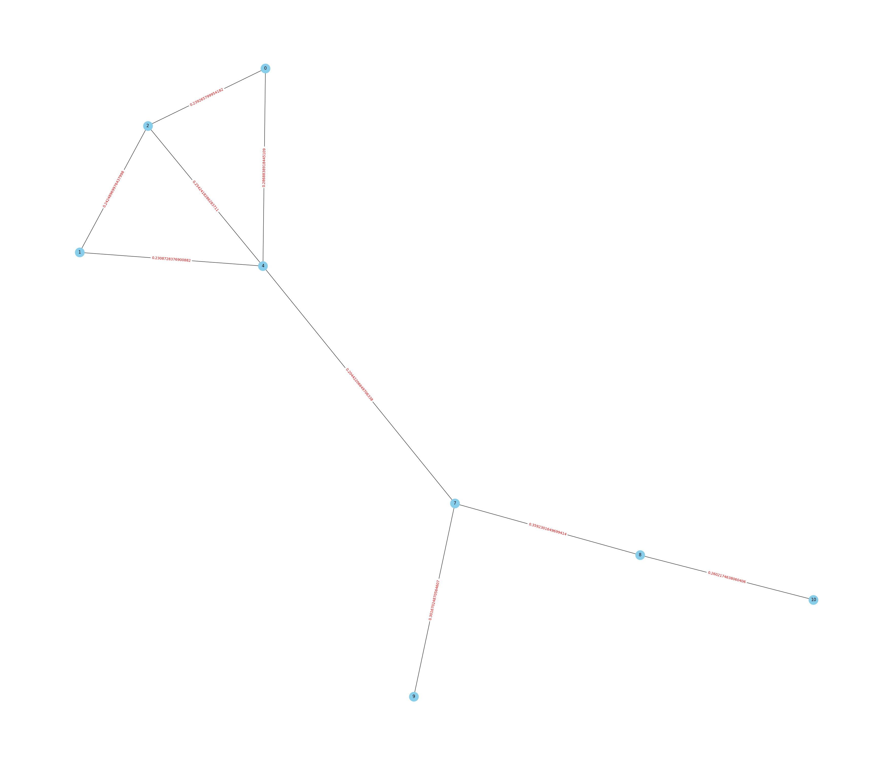
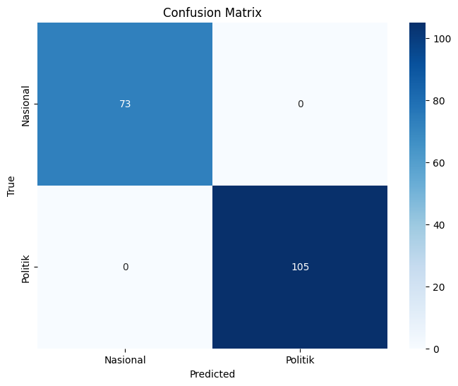

Ringkasan Berita#
Import Modul#
from nltk.tokenize import sent_tokenize
from sklearn.feature_extraction.text import TfidfVectorizer
from sklearn.metrics.pairwise import cosine_similarity
from sklearn.naive_bayes import GaussianNB
from sklearn.svm import SVC
from sklearn.model_selection import train_test_split
from sklearn.metrics import accuracy_score, classification_report, confusion_matrix
import networkx as nx
import seaborn as sns
import matplotlib.pyplot as plt
import warnings
import pandas as pd
import numpy as np
import nltk
import re
import joblib
nltk.download('stopwords')
nltk.download('punkt')
warnings.filterwarnings('ignore')
[nltk_data] Downloading package stopwords to /root/nltk_data...
[nltk_data] Unzipping corpora/stopwords.zip.
[nltk_data] Downloading package punkt to /root/nltk_data...
[nltk_data] Unzipping tokenizers/punkt.zip.
Menampilkan Data#
df = pd.read_csv('/content/drive/MyDrive/ppw/beritanasionalpolitik.csv')
df
| Judul | Isi | Label | |
|---|---|---|---|
| 0 | Warga Depok Keluhkan KIS Tiba-tiba Non-aktif, ... | DEPOK, KOMPAS.com - Kepala Dinas Sosial Kota ... | Nasional |
| 1 | IDI Konfirmasi Kenaikan Kasus Covid-19 di Indo... | JAKARTA, KOMPAS.com - Ketua Satuan Tugas (Satg... | Nasional |
| 2 | Didukung Pergerakan Perempuan Muda Nahdliyin, ... | JAKARTA, KOMPAS.com - Pergerakan Perempuan Mud... | Nasional |
| 3 | KSAD Maruli Minta Puspenerbad Susun Teori Baru... | JAKARTA, KOMPAS.com - Kepala Staf TNI Angkatan... | Nasional |
| 4 | Setiap Sesi Debat, Capres dan Cawapres Saling ... | JAKARTA, KOMPAS.com- Komisi Pemilihan Umum (KP... | Nasional |
| ... | ... | ... | ... |
| 586 | Jubir PKB: Kami Setuju Pembahasan RUU DKJ, asa... | KOMPAS.com - Juru Bicara (Jubir) Fraksi Partai... | Politik |
| 587 | Soal Rencana Pengalihan Anggaran Bansos, TKN P... | KOMPAS.com - Ketua Tim Komunikasi Tim Kampanye... | Politik |
| 588 | Soal Perubahan Format Debat, TKN Sebut Siap De... | KOMPAS.com - Sekretaris Tim Kampanye Nasional ... | Politik |
| 589 | Cegah Politisasi Bansos Jelang Pemilu 2024, Sa... | KOMPAS.com – Ketua Badan Anggaran (Banggar) De... | Politik |
| 590 | Target Menangkan Anies-Muhaimin pada Pemilu 20... | KOMPAS.com - Ketua Partai Kebangkitan Bangsa (... | Politik |
591 rows × 3 columns
Membersihkan Data#
df.isnull().sum()
Judul 0
Isi 0
Label 0
dtype: int64
df = df.dropna()
df.isnull().sum()
Judul 0
Isi 0
Label 0
dtype: int64
df.shape
(591, 3)
Menghapus kata yang tidak perlu#
def cleaning(text):
text = re.sub(r'[^\w\s.?!,]', '', text).strip()
return text
df['Cleaning'] = df['Isi'].apply(cleaning)
df['Cleaning']
0 DEPOK, KOMPAS.com Kepala Dinas Sosial Kota De...
1 JAKARTA, KOMPAS.com Ketua Satuan Tugas Satgas...
2 JAKARTA, KOMPAS.com Pergerakan Perempuan Muda...
3 JAKARTA, KOMPAS.com Kepala Staf TNI Angkatan ...
4 JAKARTA, KOMPAS.com Komisi Pemilihan Umum KPU ...
...
586 KOMPAS.com Juru Bicara Jubir Fraksi Partai Ke...
587 KOMPAS.com Ketua Tim Komunikasi Tim Kampanye ...
588 KOMPAS.com Sekretaris Tim Kampanye Nasional T...
589 KOMPAS.com Ketua Badan Anggaran Banggar Dewan...
590 KOMPAS.com Ketua Partai Kebangkitan Bangsa PK...
Name: Cleaning, Length: 591, dtype: object
Tokenisasi#
def tokenizer(text):
text = text.lower()
return sent_tokenize(text)
df['Tokenizing'] = df['Cleaning'].apply(tokenizer)
df['Tokenizing']
0 [depok, kompas.com kepala dinas sosial kota d...
1 [jakarta, kompas.com ketua satuan tugas satga...
2 [jakarta, kompas.com pergerakan perempuan mud...
3 [jakarta, kompas.com kepala staf tni angkatan...
4 [jakarta, kompas.com komisi pemilihan umum kpu...
...
586 [kompas.com juru bicara jubir fraksi partai k...
587 [kompas.com ketua tim komunikasi tim kampanye...
588 [kompas.com sekretaris tim kampanye nasional ...
589 [kompas.com ketua badan anggaran banggar dewa...
590 [kompas.com ketua partai kebangkitan bangsa p...
Name: Tokenizing, Length: 591, dtype: object
Graph Cosine Similarity#
def graph_cosine_sim(x, threshold = 0.11):
# TFIDF
vectorizer = TfidfVectorizer()
tfidf = vectorizer.fit_transform(x)
cos_sim = cosine_similarity(tfidf)
G = nx.Graph()
# Mengisi nilai similarity antara kalimat ke dalam edges (Garis Penghubung)
for i in range(len(x)):
for j in range(i+1, len(x)):
sim = cos_sim[i][j]
if sim > threshold:
G.add_edge(i, j, weight=sim)
return G
Plot Graph#
def plot_graph(G, figsize=(35, 30), node_size=700, node_color='skyblue'):
# Menggambar graf dengan canvas yang diperbesar
pos = nx.spring_layout(G) # Menentukan posisi simpul
labels = nx.get_edge_attributes(G, 'weight')
# Menentukan ukuran canvas
plt.figure(figsize=(35, 30))
# Menggambar graf dengan ukuran canvas yang diperbesar
nx.draw(G, pos, with_labels=True, node_size=700, node_color='skyblue')
nx.draw_networkx_edge_labels(G, pos, edge_labels=labels, font_color='red')
plt.show()
Ringkasan#
def summarization(x, k = 4, index=6, threshold=0.11, show_centrality=False):
# Memasukkan Nilai Cosine Similirity ke dalam Graph
G = graph_cosine_sim(x, threshold)
# Menghitung nilai dari closeness centrality
centrality = nx.closeness_centrality(G)
if show_centrality:
print(f"Nilai Closeness Centrality Dokumen Ke - {index} : {centrality}")
# Menyusun Kalimat berdasarkan nilai Closeness Centrality tertinggi dan lebih dari treshold
centrality = dict(sorted(centrality.items(), key=lambda item : item[1], reverse=True))
summary_sentences = []
for i, centr in enumerate(centrality.items()):
if i < k:
summary_sentences.append(x[centr[0]])
return (' '.join(summary_sentences), G)
Ringkasan Semua Data#
df["Summary"] = df.apply(lambda row : summarization(row['Tokenizing'], index=row.name+1, k=7, show_centrality=True)[0], axis=1)
Nilai Closeness Centrality Dokumen Ke - 1 : {0: 0.6, 2: 0.48, 4: 0.5714285714285714, 6: 0.42857142857142855, 7: 0.631578947368421, 11: 0.6, 1: 0.3870967741935484, 5: 0.34285714285714286, 9: 0.4444444444444444, 8: 0.46153846153846156, 10: 0.4444444444444444, 13: 0.3333333333333333, 12: 0.41379310344827586}
Nilai Closeness Centrality Dokumen Ke - 2 : {0: 0.8, 2: 0.8, 3: 0.8, 4: 1.0, 5: 0.5714285714285714}
Nilai Closeness Centrality Dokumen Ke - 3 : {0: 0.4090909090909091, 1: 0.5294117647058824, 2: 0.6, 4: 0.45, 7: 0.5625, 3: 0.42857142857142855, 6: 0.42857142857142855, 8: 0.45, 9: 0.34615384615384615, 10: 0.2647058823529412}
Nilai Closeness Centrality Dokumen Ke - 4 : {}
Nilai Closeness Centrality Dokumen Ke - 5 : {0: 0.8, 1: 0.8, 5: 0.8, 6: 1.0, 4: 0.8}
Nilai Closeness Centrality Dokumen Ke - 6 : {0: 0.5952380952380952, 1: 0.40322580645161293, 2: 0.5, 3: 0.4166666666666667, 4: 0.44642857142857145, 6: 0.390625, 7: 0.5434782608695653, 9: 0.4807692307692307, 10: 0.36764705882352944, 16: 0.35714285714285715, 18: 0.5434782608695653, 11: 0.390625, 19: 0.34722222222222227, 5: 0.25510204081632654, 14: 0.35714285714285715, 8: 0.3125, 13: 0.1111111111111111, 15: 0.07407407407407407, 17: 0.07407407407407407}
Nilai Closeness Centrality Dokumen Ke - 7 : {0: 1.0, 1: 1.0, 2: 1.0}
Nilai Closeness Centrality Dokumen Ke - 8 : {0: 0.8333333333333334, 1: 0.7142857142857143, 2: 1.0, 4: 0.7142857142857143, 5: 0.8333333333333334, 3: 0.5555555555555556}
Nilai Closeness Centrality Dokumen Ke - 9 : {0: 0.625, 1: 0.625, 2: 0.8333333333333334, 3: 0.8333333333333334, 4: 0.7142857142857143, 5: 0.45454545454545453}
Nilai Closeness Centrality Dokumen Ke - 10 : {0: 0.75, 1: 1.0, 2: 1.0, 3: 0.75}
Nilai Closeness Centrality Dokumen Ke - 11 : {0: 0.5151515151515151, 2: 0.68, 5: 0.5151515151515151, 6: 0.53125, 8: 0.5862068965517241, 9: 0.5666666666666667, 13: 0.38636363636363635, 1: 0.5, 3: 0.53125, 4: 0.5, 10: 0.4857142857142857, 18: 0.5, 11: 0.3953488372093023, 16: 0.3541666666666667, 12: 0.40476190476190477, 14: 0.3269230769230769, 15: 0.3695652173913043, 17: 0.34}
Nilai Closeness Centrality Dokumen Ke - 12 : {0: 0.6666666666666666, 1: 0.6666666666666666, 2: 0.6666666666666666, 3: 0.6666666666666666, 4: 0.6666666666666666, 5: 0.16666666666666666, 6: 0.16666666666666666}
Nilai Closeness Centrality Dokumen Ke - 13 : {0: 1.0, 1: 1.0}
Nilai Closeness Centrality Dokumen Ke - 14 : {0: 0.6153846153846154, 5: 0.5333333333333333, 6: 0.5333333333333333, 7: 0.8, 8: 0.5714285714285714, 1: 0.5714285714285714, 2: 0.5714285714285714, 3: 0.4, 9: 0.38095238095238093}
Nilai Closeness Centrality Dokumen Ke - 15 : {0: 0.7272727272727273, 1: 0.7272727272727273, 2: 0.7272727272727273, 3: 0.7272727272727273, 4: 0.7272727272727273, 5: 0.7272727272727273, 6: 0.8888888888888888, 7: 0.5714285714285714, 8: 0.38095238095238093}
Nilai Closeness Centrality Dokumen Ke - 16 : {0: 1.0, 1: 0.7142857142857143, 2: 0.8333333333333334, 3: 0.7142857142857143, 4: 0.8333333333333334, 5: 0.7142857142857143}
Nilai Closeness Centrality Dokumen Ke - 17 : {0: 1.0, 1: 1.0, 2: 1.0}
Nilai Closeness Centrality Dokumen Ke - 18 : {0: 0.6, 2: 0.48, 4: 0.5714285714285714, 6: 0.42857142857142855, 7: 0.631578947368421, 11: 0.6, 1: 0.3870967741935484, 5: 0.34285714285714286, 9: 0.4444444444444444, 8: 0.46153846153846156, 10: 0.4444444444444444, 13: 0.3333333333333333, 12: 0.41379310344827586}
Nilai Closeness Centrality Dokumen Ke - 19 : {0: 0.8, 2: 0.8, 3: 0.8, 4: 1.0, 5: 0.5714285714285714}
Nilai Closeness Centrality Dokumen Ke - 20 : {0: 0.4090909090909091, 1: 0.5294117647058824, 2: 0.6, 4: 0.45, 7: 0.5625, 3: 0.42857142857142855, 6: 0.42857142857142855, 8: 0.45, 9: 0.34615384615384615, 10: 0.2647058823529412}
Nilai Closeness Centrality Dokumen Ke - 21 : {}
Nilai Closeness Centrality Dokumen Ke - 22 : {0: 0.8, 1: 0.8, 5: 0.8, 6: 1.0, 4: 0.8}
Nilai Closeness Centrality Dokumen Ke - 23 : {0: 0.5952380952380952, 1: 0.40322580645161293, 2: 0.5, 3: 0.4166666666666667, 4: 0.44642857142857145, 6: 0.390625, 7: 0.5434782608695653, 9: 0.4807692307692307, 10: 0.36764705882352944, 16: 0.35714285714285715, 18: 0.5434782608695653, 11: 0.390625, 19: 0.34722222222222227, 5: 0.25510204081632654, 14: 0.35714285714285715, 8: 0.3125, 13: 0.1111111111111111, 15: 0.07407407407407407, 17: 0.07407407407407407}
Nilai Closeness Centrality Dokumen Ke - 24 : {0: 1.0, 1: 1.0, 2: 1.0}
Nilai Closeness Centrality Dokumen Ke - 25 : {0: 0.8333333333333334, 1: 0.7142857142857143, 2: 1.0, 4: 0.7142857142857143, 5: 0.8333333333333334, 3: 0.5555555555555556}
Nilai Closeness Centrality Dokumen Ke - 26 : {0: 0.625, 1: 0.625, 2: 0.8333333333333334, 3: 0.8333333333333334, 4: 0.7142857142857143, 5: 0.45454545454545453}
Nilai Closeness Centrality Dokumen Ke - 27 : {0: 0.75, 1: 1.0, 2: 1.0, 3: 0.75}
Nilai Closeness Centrality Dokumen Ke - 28 : {0: 0.5151515151515151, 2: 0.68, 5: 0.5151515151515151, 6: 0.53125, 8: 0.5862068965517241, 9: 0.5666666666666667, 13: 0.38636363636363635, 1: 0.5, 3: 0.53125, 4: 0.5, 10: 0.4857142857142857, 18: 0.5, 11: 0.3953488372093023, 16: 0.3541666666666667, 12: 0.40476190476190477, 14: 0.3269230769230769, 15: 0.3695652173913043, 17: 0.34}
Nilai Closeness Centrality Dokumen Ke - 29 : {0: 0.6666666666666666, 1: 0.6666666666666666, 2: 0.6666666666666666, 3: 0.6666666666666666, 4: 0.6666666666666666, 5: 0.16666666666666666, 6: 0.16666666666666666}
Nilai Closeness Centrality Dokumen Ke - 30 : {0: 1.0, 1: 1.0}
Nilai Closeness Centrality Dokumen Ke - 31 : {0: 0.6153846153846154, 5: 0.5333333333333333, 6: 0.5333333333333333, 7: 0.8, 8: 0.5714285714285714, 1: 0.5714285714285714, 2: 0.5714285714285714, 3: 0.4, 9: 0.38095238095238093}
Nilai Closeness Centrality Dokumen Ke - 32 : {0: 0.7272727272727273, 1: 0.7272727272727273, 2: 0.7272727272727273, 3: 0.7272727272727273, 4: 0.7272727272727273, 5: 0.7272727272727273, 6: 0.8888888888888888, 7: 0.5714285714285714, 8: 0.38095238095238093}
Nilai Closeness Centrality Dokumen Ke - 33 : {0: 1.0, 1: 0.7142857142857143, 2: 0.8333333333333334, 3: 0.7142857142857143, 4: 0.8333333333333334, 5: 0.7142857142857143}
Nilai Closeness Centrality Dokumen Ke - 34 : {0: 1.0, 1: 1.0, 2: 1.0}
Nilai Closeness Centrality Dokumen Ke - 35 : {0: 0.6, 2: 0.48, 4: 0.5714285714285714, 6: 0.42857142857142855, 7: 0.631578947368421, 11: 0.6, 1: 0.3870967741935484, 5: 0.34285714285714286, 9: 0.4444444444444444, 8: 0.46153846153846156, 10: 0.4444444444444444, 13: 0.3333333333333333, 12: 0.41379310344827586}
Nilai Closeness Centrality Dokumen Ke - 36 : {0: 0.8, 2: 0.8, 3: 0.8, 4: 1.0, 5: 0.5714285714285714}
Nilai Closeness Centrality Dokumen Ke - 37 : {0: 0.4090909090909091, 1: 0.5294117647058824, 2: 0.6, 4: 0.45, 7: 0.5625, 3: 0.42857142857142855, 6: 0.42857142857142855, 8: 0.45, 9: 0.34615384615384615, 10: 0.2647058823529412}
Nilai Closeness Centrality Dokumen Ke - 38 : {}
Nilai Closeness Centrality Dokumen Ke - 39 : {0: 0.8, 1: 0.8, 5: 0.8, 6: 1.0, 4: 0.8}
Nilai Closeness Centrality Dokumen Ke - 40 : {0: 0.5952380952380952, 1: 0.40322580645161293, 2: 0.5, 3: 0.4166666666666667, 4: 0.44642857142857145, 6: 0.390625, 7: 0.5434782608695653, 9: 0.4807692307692307, 10: 0.36764705882352944, 16: 0.35714285714285715, 18: 0.5434782608695653, 11: 0.390625, 19: 0.34722222222222227, 5: 0.25510204081632654, 14: 0.35714285714285715, 8: 0.3125, 13: 0.1111111111111111, 15: 0.07407407407407407, 17: 0.07407407407407407}
Nilai Closeness Centrality Dokumen Ke - 41 : {0: 1.0, 1: 1.0, 2: 1.0}
Nilai Closeness Centrality Dokumen Ke - 42 : {0: 0.8333333333333334, 1: 0.7142857142857143, 2: 1.0, 4: 0.7142857142857143, 5: 0.8333333333333334, 3: 0.5555555555555556}
Nilai Closeness Centrality Dokumen Ke - 43 : {0: 0.625, 1: 0.625, 2: 0.8333333333333334, 3: 0.8333333333333334, 4: 0.7142857142857143, 5: 0.45454545454545453}
Nilai Closeness Centrality Dokumen Ke - 44 : {0: 0.75, 1: 1.0, 2: 1.0, 3: 0.75}
Nilai Closeness Centrality Dokumen Ke - 45 : {0: 0.5151515151515151, 2: 0.68, 5: 0.5151515151515151, 6: 0.53125, 8: 0.5862068965517241, 9: 0.5666666666666667, 13: 0.38636363636363635, 1: 0.5, 3: 0.53125, 4: 0.5, 10: 0.4857142857142857, 18: 0.5, 11: 0.3953488372093023, 16: 0.3541666666666667, 12: 0.40476190476190477, 14: 0.3269230769230769, 15: 0.3695652173913043, 17: 0.34}
Nilai Closeness Centrality Dokumen Ke - 46 : {0: 0.6666666666666666, 1: 0.6666666666666666, 2: 0.6666666666666666, 3: 0.6666666666666666, 4: 0.6666666666666666, 5: 0.16666666666666666, 6: 0.16666666666666666}
Nilai Closeness Centrality Dokumen Ke - 47 : {0: 1.0, 1: 1.0}
Nilai Closeness Centrality Dokumen Ke - 48 : {0: 0.6153846153846154, 5: 0.5333333333333333, 6: 0.5333333333333333, 7: 0.8, 8: 0.5714285714285714, 1: 0.5714285714285714, 2: 0.5714285714285714, 3: 0.4, 9: 0.38095238095238093}
Nilai Closeness Centrality Dokumen Ke - 49 : {0: 0.7272727272727273, 1: 0.7272727272727273, 2: 0.7272727272727273, 3: 0.7272727272727273, 4: 0.7272727272727273, 5: 0.7272727272727273, 6: 0.8888888888888888, 7: 0.5714285714285714, 8: 0.38095238095238093}
Nilai Closeness Centrality Dokumen Ke - 50 : {0: 1.0, 1: 0.7142857142857143, 2: 0.8333333333333334, 3: 0.7142857142857143, 4: 0.8333333333333334, 5: 0.7142857142857143}
Nilai Closeness Centrality Dokumen Ke - 51 : {0: 1.0, 1: 1.0, 2: 1.0}
Nilai Closeness Centrality Dokumen Ke - 52 : {0: 0.6, 2: 0.48, 4: 0.5714285714285714, 6: 0.42857142857142855, 7: 0.631578947368421, 11: 0.6, 1: 0.3870967741935484, 5: 0.34285714285714286, 9: 0.4444444444444444, 8: 0.46153846153846156, 10: 0.4444444444444444, 13: 0.3333333333333333, 12: 0.41379310344827586}
Nilai Closeness Centrality Dokumen Ke - 53 : {0: 0.8, 2: 0.8, 3: 0.8, 4: 1.0, 5: 0.5714285714285714}
Nilai Closeness Centrality Dokumen Ke - 54 : {0: 0.4090909090909091, 1: 0.5294117647058824, 2: 0.6, 4: 0.45, 7: 0.5625, 3: 0.42857142857142855, 6: 0.42857142857142855, 8: 0.45, 9: 0.34615384615384615, 10: 0.2647058823529412}
Nilai Closeness Centrality Dokumen Ke - 55 : {}
Nilai Closeness Centrality Dokumen Ke - 56 : {0: 0.8, 1: 0.8, 5: 0.8, 6: 1.0, 4: 0.8}
Nilai Closeness Centrality Dokumen Ke - 57 : {0: 0.5952380952380952, 1: 0.40322580645161293, 2: 0.5, 3: 0.4166666666666667, 4: 0.44642857142857145, 6: 0.390625, 7: 0.5434782608695653, 9: 0.4807692307692307, 10: 0.36764705882352944, 16: 0.35714285714285715, 18: 0.5434782608695653, 11: 0.390625, 19: 0.34722222222222227, 5: 0.25510204081632654, 14: 0.35714285714285715, 8: 0.3125, 13: 0.1111111111111111, 15: 0.07407407407407407, 17: 0.07407407407407407}
Nilai Closeness Centrality Dokumen Ke - 58 : {0: 1.0, 1: 1.0, 2: 1.0}
Nilai Closeness Centrality Dokumen Ke - 59 : {0: 0.8333333333333334, 1: 0.7142857142857143, 2: 1.0, 4: 0.7142857142857143, 5: 0.8333333333333334, 3: 0.5555555555555556}
Nilai Closeness Centrality Dokumen Ke - 60 : {0: 0.625, 1: 0.625, 2: 0.8333333333333334, 3: 0.8333333333333334, 4: 0.7142857142857143, 5: 0.45454545454545453}
Nilai Closeness Centrality Dokumen Ke - 61 : {0: 0.75, 1: 1.0, 2: 1.0, 3: 0.75}
Nilai Closeness Centrality Dokumen Ke - 62 : {0: 0.5151515151515151, 2: 0.68, 5: 0.5151515151515151, 6: 0.53125, 8: 0.5862068965517241, 9: 0.5666666666666667, 13: 0.38636363636363635, 1: 0.5, 3: 0.53125, 4: 0.5, 10: 0.4857142857142857, 18: 0.5, 11: 0.3953488372093023, 16: 0.3541666666666667, 12: 0.40476190476190477, 14: 0.3269230769230769, 15: 0.3695652173913043, 17: 0.34}
Nilai Closeness Centrality Dokumen Ke - 63 : {0: 0.6666666666666666, 1: 0.6666666666666666, 2: 0.6666666666666666, 3: 0.6666666666666666, 4: 0.6666666666666666, 5: 0.16666666666666666, 6: 0.16666666666666666}
Nilai Closeness Centrality Dokumen Ke - 64 : {0: 1.0, 1: 1.0}
Nilai Closeness Centrality Dokumen Ke - 65 : {0: 0.6153846153846154, 5: 0.5333333333333333, 6: 0.5333333333333333, 7: 0.8, 8: 0.5714285714285714, 1: 0.5714285714285714, 2: 0.5714285714285714, 3: 0.4, 9: 0.38095238095238093}
Nilai Closeness Centrality Dokumen Ke - 66 : {0: 0.7272727272727273, 1: 0.7272727272727273, 2: 0.7272727272727273, 3: 0.7272727272727273, 4: 0.7272727272727273, 5: 0.7272727272727273, 6: 0.8888888888888888, 7: 0.5714285714285714, 8: 0.38095238095238093}
Nilai Closeness Centrality Dokumen Ke - 67 : {0: 1.0, 1: 0.7142857142857143, 2: 0.8333333333333334, 3: 0.7142857142857143, 4: 0.8333333333333334, 5: 0.7142857142857143}
Nilai Closeness Centrality Dokumen Ke - 68 : {0: 1.0, 1: 1.0, 2: 1.0}
Nilai Closeness Centrality Dokumen Ke - 69 : {0: 0.6, 2: 0.48, 4: 0.5714285714285714, 6: 0.42857142857142855, 7: 0.631578947368421, 11: 0.6, 1: 0.3870967741935484, 5: 0.34285714285714286, 9: 0.4444444444444444, 8: 0.46153846153846156, 10: 0.4444444444444444, 13: 0.3333333333333333, 12: 0.41379310344827586}
Nilai Closeness Centrality Dokumen Ke - 70 : {0: 0.8, 2: 0.8, 3: 0.8, 4: 1.0, 5: 0.5714285714285714}
Nilai Closeness Centrality Dokumen Ke - 71 : {0: 0.4090909090909091, 1: 0.5294117647058824, 2: 0.6, 4: 0.45, 7: 0.5625, 3: 0.42857142857142855, 6: 0.42857142857142855, 8: 0.45, 9: 0.34615384615384615, 10: 0.2647058823529412}
Nilai Closeness Centrality Dokumen Ke - 72 : {}
Nilai Closeness Centrality Dokumen Ke - 73 : {0: 0.8, 1: 0.8, 5: 0.8, 6: 1.0, 4: 0.8}
Nilai Closeness Centrality Dokumen Ke - 74 : {0: 0.5952380952380952, 1: 0.40322580645161293, 2: 0.5, 3: 0.4166666666666667, 4: 0.44642857142857145, 6: 0.390625, 7: 0.5434782608695653, 9: 0.4807692307692307, 10: 0.36764705882352944, 16: 0.35714285714285715, 18: 0.5434782608695653, 11: 0.390625, 19: 0.34722222222222227, 5: 0.25510204081632654, 14: 0.35714285714285715, 8: 0.3125, 13: 0.1111111111111111, 15: 0.07407407407407407, 17: 0.07407407407407407}
Nilai Closeness Centrality Dokumen Ke - 75 : {0: 1.0, 1: 1.0, 2: 1.0}
Nilai Closeness Centrality Dokumen Ke - 76 : {0: 0.8333333333333334, 1: 0.7142857142857143, 2: 1.0, 4: 0.7142857142857143, 5: 0.8333333333333334, 3: 0.5555555555555556}
Nilai Closeness Centrality Dokumen Ke - 77 : {0: 0.625, 1: 0.625, 2: 0.8333333333333334, 3: 0.8333333333333334, 4: 0.7142857142857143, 5: 0.45454545454545453}
Nilai Closeness Centrality Dokumen Ke - 78 : {0: 0.75, 1: 1.0, 2: 1.0, 3: 0.75}
Nilai Closeness Centrality Dokumen Ke - 79 : {0: 0.5151515151515151, 2: 0.68, 5: 0.5151515151515151, 6: 0.53125, 8: 0.5862068965517241, 9: 0.5666666666666667, 13: 0.38636363636363635, 1: 0.5, 3: 0.53125, 4: 0.5, 10: 0.4857142857142857, 18: 0.5, 11: 0.3953488372093023, 16: 0.3541666666666667, 12: 0.40476190476190477, 14: 0.3269230769230769, 15: 0.3695652173913043, 17: 0.34}
Nilai Closeness Centrality Dokumen Ke - 80 : {0: 0.6666666666666666, 1: 0.6666666666666666, 2: 0.6666666666666666, 3: 0.6666666666666666, 4: 0.6666666666666666, 5: 0.16666666666666666, 6: 0.16666666666666666}
Nilai Closeness Centrality Dokumen Ke - 81 : {0: 1.0, 1: 1.0}
Nilai Closeness Centrality Dokumen Ke - 82 : {0: 0.6153846153846154, 5: 0.5333333333333333, 6: 0.5333333333333333, 7: 0.8, 8: 0.5714285714285714, 1: 0.5714285714285714, 2: 0.5714285714285714, 3: 0.4, 9: 0.38095238095238093}
Nilai Closeness Centrality Dokumen Ke - 83 : {0: 0.7272727272727273, 1: 0.7272727272727273, 2: 0.7272727272727273, 3: 0.7272727272727273, 4: 0.7272727272727273, 5: 0.7272727272727273, 6: 0.8888888888888888, 7: 0.5714285714285714, 8: 0.38095238095238093}
Nilai Closeness Centrality Dokumen Ke - 84 : {0: 1.0, 1: 0.7142857142857143, 2: 0.8333333333333334, 3: 0.7142857142857143, 4: 0.8333333333333334, 5: 0.7142857142857143}
Nilai Closeness Centrality Dokumen Ke - 85 : {0: 1.0, 1: 1.0, 2: 1.0}
Nilai Closeness Centrality Dokumen Ke - 86 : {0: 0.6, 2: 0.48, 4: 0.5714285714285714, 6: 0.42857142857142855, 7: 0.631578947368421, 11: 0.6, 1: 0.3870967741935484, 5: 0.34285714285714286, 9: 0.4444444444444444, 8: 0.46153846153846156, 10: 0.4444444444444444, 13: 0.3333333333333333, 12: 0.41379310344827586}
Nilai Closeness Centrality Dokumen Ke - 87 : {0: 0.8, 2: 0.8, 3: 0.8, 4: 1.0, 5: 0.5714285714285714}
Nilai Closeness Centrality Dokumen Ke - 88 : {0: 0.4090909090909091, 1: 0.5294117647058824, 2: 0.6, 4: 0.45, 7: 0.5625, 3: 0.42857142857142855, 6: 0.42857142857142855, 8: 0.45, 9: 0.34615384615384615, 10: 0.2647058823529412}
Nilai Closeness Centrality Dokumen Ke - 89 : {}
Nilai Closeness Centrality Dokumen Ke - 90 : {0: 0.8, 1: 0.8, 5: 0.8, 6: 1.0, 4: 0.8}
Nilai Closeness Centrality Dokumen Ke - 91 : {0: 0.5952380952380952, 1: 0.40322580645161293, 2: 0.5, 3: 0.4166666666666667, 4: 0.44642857142857145, 6: 0.390625, 7: 0.5434782608695653, 9: 0.4807692307692307, 10: 0.36764705882352944, 16: 0.35714285714285715, 18: 0.5434782608695653, 11: 0.390625, 19: 0.34722222222222227, 5: 0.25510204081632654, 14: 0.35714285714285715, 8: 0.3125, 13: 0.1111111111111111, 15: 0.07407407407407407, 17: 0.07407407407407407}
Nilai Closeness Centrality Dokumen Ke - 92 : {0: 1.0, 1: 1.0, 2: 1.0}
Nilai Closeness Centrality Dokumen Ke - 93 : {0: 0.8333333333333334, 1: 0.7142857142857143, 2: 1.0, 4: 0.7142857142857143, 5: 0.8333333333333334, 3: 0.5555555555555556}
Nilai Closeness Centrality Dokumen Ke - 94 : {0: 0.625, 1: 0.625, 2: 0.8333333333333334, 3: 0.8333333333333334, 4: 0.7142857142857143, 5: 0.45454545454545453}
Nilai Closeness Centrality Dokumen Ke - 95 : {0: 0.75, 1: 1.0, 2: 1.0, 3: 0.75}
Nilai Closeness Centrality Dokumen Ke - 96 : {0: 0.5151515151515151, 2: 0.68, 5: 0.5151515151515151, 6: 0.53125, 8: 0.5862068965517241, 9: 0.5666666666666667, 13: 0.38636363636363635, 1: 0.5, 3: 0.53125, 4: 0.5, 10: 0.4857142857142857, 18: 0.5, 11: 0.3953488372093023, 16: 0.3541666666666667, 12: 0.40476190476190477, 14: 0.3269230769230769, 15: 0.3695652173913043, 17: 0.34}
Nilai Closeness Centrality Dokumen Ke - 97 : {0: 0.6666666666666666, 1: 0.6666666666666666, 2: 0.6666666666666666, 3: 0.6666666666666666, 4: 0.6666666666666666, 5: 0.16666666666666666, 6: 0.16666666666666666}
Nilai Closeness Centrality Dokumen Ke - 98 : {0: 1.0, 1: 1.0}
Nilai Closeness Centrality Dokumen Ke - 99 : {0: 0.6153846153846154, 5: 0.5333333333333333, 6: 0.5333333333333333, 7: 0.8, 8: 0.5714285714285714, 1: 0.5714285714285714, 2: 0.5714285714285714, 3: 0.4, 9: 0.38095238095238093}
Nilai Closeness Centrality Dokumen Ke - 100 : {0: 0.7272727272727273, 1: 0.7272727272727273, 2: 0.7272727272727273, 3: 0.7272727272727273, 4: 0.7272727272727273, 5: 0.7272727272727273, 6: 0.8888888888888888, 7: 0.5714285714285714, 8: 0.38095238095238093}
Nilai Closeness Centrality Dokumen Ke - 101 : {0: 1.0, 1: 0.7142857142857143, 2: 0.8333333333333334, 3: 0.7142857142857143, 4: 0.8333333333333334, 5: 0.7142857142857143}
Nilai Closeness Centrality Dokumen Ke - 102 : {0: 1.0, 1: 1.0, 2: 1.0}
Nilai Closeness Centrality Dokumen Ke - 103 : {0: 0.6, 2: 0.48, 4: 0.5714285714285714, 6: 0.42857142857142855, 7: 0.631578947368421, 11: 0.6, 1: 0.3870967741935484, 5: 0.34285714285714286, 9: 0.4444444444444444, 8: 0.46153846153846156, 10: 0.4444444444444444, 13: 0.3333333333333333, 12: 0.41379310344827586}
Nilai Closeness Centrality Dokumen Ke - 104 : {0: 0.8, 2: 0.8, 3: 0.8, 4: 1.0, 5: 0.5714285714285714}
Nilai Closeness Centrality Dokumen Ke - 105 : {0: 0.4090909090909091, 1: 0.5294117647058824, 2: 0.6, 4: 0.45, 7: 0.5625, 3: 0.42857142857142855, 6: 0.42857142857142855, 8: 0.45, 9: 0.34615384615384615, 10: 0.2647058823529412}
Nilai Closeness Centrality Dokumen Ke - 106 : {}
Nilai Closeness Centrality Dokumen Ke - 107 : {0: 0.8, 1: 0.8, 5: 0.8, 6: 1.0, 4: 0.8}
Nilai Closeness Centrality Dokumen Ke - 108 : {0: 0.5952380952380952, 1: 0.40322580645161293, 2: 0.5, 3: 0.4166666666666667, 4: 0.44642857142857145, 6: 0.390625, 7: 0.5434782608695653, 9: 0.4807692307692307, 10: 0.36764705882352944, 16: 0.35714285714285715, 18: 0.5434782608695653, 11: 0.390625, 19: 0.34722222222222227, 5: 0.25510204081632654, 14: 0.35714285714285715, 8: 0.3125, 13: 0.1111111111111111, 15: 0.07407407407407407, 17: 0.07407407407407407}
Nilai Closeness Centrality Dokumen Ke - 109 : {0: 1.0, 1: 1.0, 2: 1.0}
Nilai Closeness Centrality Dokumen Ke - 110 : {0: 0.8333333333333334, 1: 0.7142857142857143, 2: 1.0, 4: 0.7142857142857143, 5: 0.8333333333333334, 3: 0.5555555555555556}
Nilai Closeness Centrality Dokumen Ke - 111 : {0: 0.625, 1: 0.625, 2: 0.8333333333333334, 3: 0.8333333333333334, 4: 0.7142857142857143, 5: 0.45454545454545453}
Nilai Closeness Centrality Dokumen Ke - 112 : {0: 0.75, 1: 1.0, 2: 1.0, 3: 0.75}
Nilai Closeness Centrality Dokumen Ke - 113 : {0: 0.5151515151515151, 2: 0.68, 5: 0.5151515151515151, 6: 0.53125, 8: 0.5862068965517241, 9: 0.5666666666666667, 13: 0.38636363636363635, 1: 0.5, 3: 0.53125, 4: 0.5, 10: 0.4857142857142857, 18: 0.5, 11: 0.3953488372093023, 16: 0.3541666666666667, 12: 0.40476190476190477, 14: 0.3269230769230769, 15: 0.3695652173913043, 17: 0.34}
Nilai Closeness Centrality Dokumen Ke - 114 : {0: 0.6666666666666666, 1: 0.6666666666666666, 2: 0.6666666666666666, 3: 0.6666666666666666, 4: 0.6666666666666666, 5: 0.16666666666666666, 6: 0.16666666666666666}
Nilai Closeness Centrality Dokumen Ke - 115 : {0: 1.0, 1: 1.0}
Nilai Closeness Centrality Dokumen Ke - 116 : {0: 0.6153846153846154, 5: 0.5333333333333333, 6: 0.5333333333333333, 7: 0.8, 8: 0.5714285714285714, 1: 0.5714285714285714, 2: 0.5714285714285714, 3: 0.4, 9: 0.38095238095238093}
Nilai Closeness Centrality Dokumen Ke - 117 : {0: 0.7272727272727273, 1: 0.7272727272727273, 2: 0.7272727272727273, 3: 0.7272727272727273, 4: 0.7272727272727273, 5: 0.7272727272727273, 6: 0.8888888888888888, 7: 0.5714285714285714, 8: 0.38095238095238093}
Nilai Closeness Centrality Dokumen Ke - 118 : {0: 1.0, 1: 0.7142857142857143, 2: 0.8333333333333334, 3: 0.7142857142857143, 4: 0.8333333333333334, 5: 0.7142857142857143}
Nilai Closeness Centrality Dokumen Ke - 119 : {0: 1.0, 1: 1.0, 2: 1.0}
Nilai Closeness Centrality Dokumen Ke - 120 : {0: 0.6, 2: 0.48, 4: 0.5714285714285714, 6: 0.42857142857142855, 7: 0.631578947368421, 11: 0.6, 1: 0.3870967741935484, 5: 0.34285714285714286, 9: 0.4444444444444444, 8: 0.46153846153846156, 10: 0.4444444444444444, 13: 0.3333333333333333, 12: 0.41379310344827586}
Nilai Closeness Centrality Dokumen Ke - 121 : {0: 0.8, 2: 0.8, 3: 0.8, 4: 1.0, 5: 0.5714285714285714}
Nilai Closeness Centrality Dokumen Ke - 122 : {0: 0.4090909090909091, 1: 0.5294117647058824, 2: 0.6, 4: 0.45, 7: 0.5625, 3: 0.42857142857142855, 6: 0.42857142857142855, 8: 0.45, 9: 0.34615384615384615, 10: 0.2647058823529412}
Nilai Closeness Centrality Dokumen Ke - 123 : {}
Nilai Closeness Centrality Dokumen Ke - 124 : {0: 0.8, 1: 0.8, 5: 0.8, 6: 1.0, 4: 0.8}
Nilai Closeness Centrality Dokumen Ke - 125 : {0: 0.5952380952380952, 1: 0.40322580645161293, 2: 0.5, 3: 0.4166666666666667, 4: 0.44642857142857145, 6: 0.390625, 7: 0.5434782608695653, 9: 0.4807692307692307, 10: 0.36764705882352944, 16: 0.35714285714285715, 18: 0.5434782608695653, 11: 0.390625, 19: 0.34722222222222227, 5: 0.25510204081632654, 14: 0.35714285714285715, 8: 0.3125, 13: 0.1111111111111111, 15: 0.07407407407407407, 17: 0.07407407407407407}
Nilai Closeness Centrality Dokumen Ke - 126 : {0: 1.0, 1: 1.0, 2: 1.0}
Nilai Closeness Centrality Dokumen Ke - 127 : {0: 0.8333333333333334, 1: 0.7142857142857143, 2: 1.0, 4: 0.7142857142857143, 5: 0.8333333333333334, 3: 0.5555555555555556}
Nilai Closeness Centrality Dokumen Ke - 128 : {0: 0.625, 1: 0.625, 2: 0.8333333333333334, 3: 0.8333333333333334, 4: 0.7142857142857143, 5: 0.45454545454545453}
Nilai Closeness Centrality Dokumen Ke - 129 : {0: 0.75, 1: 1.0, 2: 1.0, 3: 0.75}
Nilai Closeness Centrality Dokumen Ke - 130 : {0: 0.5151515151515151, 2: 0.68, 5: 0.5151515151515151, 6: 0.53125, 8: 0.5862068965517241, 9: 0.5666666666666667, 13: 0.38636363636363635, 1: 0.5, 3: 0.53125, 4: 0.5, 10: 0.4857142857142857, 18: 0.5, 11: 0.3953488372093023, 16: 0.3541666666666667, 12: 0.40476190476190477, 14: 0.3269230769230769, 15: 0.3695652173913043, 17: 0.34}
Nilai Closeness Centrality Dokumen Ke - 131 : {0: 0.6666666666666666, 1: 0.6666666666666666, 2: 0.6666666666666666, 3: 0.6666666666666666, 4: 0.6666666666666666, 5: 0.16666666666666666, 6: 0.16666666666666666}
Nilai Closeness Centrality Dokumen Ke - 132 : {0: 1.0, 1: 1.0}
Nilai Closeness Centrality Dokumen Ke - 133 : {0: 0.6153846153846154, 5: 0.5333333333333333, 6: 0.5333333333333333, 7: 0.8, 8: 0.5714285714285714, 1: 0.5714285714285714, 2: 0.5714285714285714, 3: 0.4, 9: 0.38095238095238093}
Nilai Closeness Centrality Dokumen Ke - 134 : {0: 0.7272727272727273, 1: 0.7272727272727273, 2: 0.7272727272727273, 3: 0.7272727272727273, 4: 0.7272727272727273, 5: 0.7272727272727273, 6: 0.8888888888888888, 7: 0.5714285714285714, 8: 0.38095238095238093}
Nilai Closeness Centrality Dokumen Ke - 135 : {0: 1.0, 1: 0.7142857142857143, 2: 0.8333333333333334, 3: 0.7142857142857143, 4: 0.8333333333333334, 5: 0.7142857142857143}
Nilai Closeness Centrality Dokumen Ke - 136 : {0: 1.0, 1: 1.0, 2: 1.0}
Nilai Closeness Centrality Dokumen Ke - 137 : {0: 0.6, 2: 0.48, 4: 0.5714285714285714, 6: 0.42857142857142855, 7: 0.631578947368421, 11: 0.6, 1: 0.3870967741935484, 5: 0.34285714285714286, 9: 0.4444444444444444, 8: 0.46153846153846156, 10: 0.4444444444444444, 13: 0.3333333333333333, 12: 0.41379310344827586}
Nilai Closeness Centrality Dokumen Ke - 138 : {0: 0.8, 2: 0.8, 3: 0.8, 4: 1.0, 5: 0.5714285714285714}
Nilai Closeness Centrality Dokumen Ke - 139 : {0: 0.4090909090909091, 1: 0.5294117647058824, 2: 0.6, 4: 0.45, 7: 0.5625, 3: 0.42857142857142855, 6: 0.42857142857142855, 8: 0.45, 9: 0.34615384615384615, 10: 0.2647058823529412}
Nilai Closeness Centrality Dokumen Ke - 140 : {}
Nilai Closeness Centrality Dokumen Ke - 141 : {0: 0.8, 1: 0.8, 5: 0.8, 6: 1.0, 4: 0.8}
Nilai Closeness Centrality Dokumen Ke - 142 : {0: 0.5952380952380952, 1: 0.40322580645161293, 2: 0.5, 3: 0.4166666666666667, 4: 0.44642857142857145, 6: 0.390625, 7: 0.5434782608695653, 9: 0.4807692307692307, 10: 0.36764705882352944, 16: 0.35714285714285715, 18: 0.5434782608695653, 11: 0.390625, 19: 0.34722222222222227, 5: 0.25510204081632654, 14: 0.35714285714285715, 8: 0.3125, 13: 0.1111111111111111, 15: 0.07407407407407407, 17: 0.07407407407407407}
Nilai Closeness Centrality Dokumen Ke - 143 : {0: 1.0, 1: 1.0, 2: 1.0}
Nilai Closeness Centrality Dokumen Ke - 144 : {0: 0.8333333333333334, 1: 0.7142857142857143, 2: 1.0, 4: 0.7142857142857143, 5: 0.8333333333333334, 3: 0.5555555555555556}
Nilai Closeness Centrality Dokumen Ke - 145 : {0: 0.625, 1: 0.625, 2: 0.8333333333333334, 3: 0.8333333333333334, 4: 0.7142857142857143, 5: 0.45454545454545453}
Nilai Closeness Centrality Dokumen Ke - 146 : {0: 0.75, 1: 1.0, 2: 1.0, 3: 0.75}
Nilai Closeness Centrality Dokumen Ke - 147 : {0: 0.5151515151515151, 2: 0.68, 5: 0.5151515151515151, 6: 0.53125, 8: 0.5862068965517241, 9: 0.5666666666666667, 13: 0.38636363636363635, 1: 0.5, 3: 0.53125, 4: 0.5, 10: 0.4857142857142857, 18: 0.5, 11: 0.3953488372093023, 16: 0.3541666666666667, 12: 0.40476190476190477, 14: 0.3269230769230769, 15: 0.3695652173913043, 17: 0.34}
Nilai Closeness Centrality Dokumen Ke - 148 : {0: 0.6666666666666666, 1: 0.6666666666666666, 2: 0.6666666666666666, 3: 0.6666666666666666, 4: 0.6666666666666666, 5: 0.16666666666666666, 6: 0.16666666666666666}
Nilai Closeness Centrality Dokumen Ke - 149 : {0: 1.0, 1: 1.0}
Nilai Closeness Centrality Dokumen Ke - 150 : {0: 0.6153846153846154, 5: 0.5333333333333333, 6: 0.5333333333333333, 7: 0.8, 8: 0.5714285714285714, 1: 0.5714285714285714, 2: 0.5714285714285714, 3: 0.4, 9: 0.38095238095238093}
Nilai Closeness Centrality Dokumen Ke - 151 : {0: 0.7272727272727273, 1: 0.7272727272727273, 2: 0.7272727272727273, 3: 0.7272727272727273, 4: 0.7272727272727273, 5: 0.7272727272727273, 6: 0.8888888888888888, 7: 0.5714285714285714, 8: 0.38095238095238093}
Nilai Closeness Centrality Dokumen Ke - 152 : {0: 1.0, 1: 0.7142857142857143, 2: 0.8333333333333334, 3: 0.7142857142857143, 4: 0.8333333333333334, 5: 0.7142857142857143}
Nilai Closeness Centrality Dokumen Ke - 153 : {0: 1.0, 1: 1.0, 2: 1.0}
Nilai Closeness Centrality Dokumen Ke - 154 : {0: 0.6, 2: 0.48, 4: 0.5714285714285714, 6: 0.42857142857142855, 7: 0.631578947368421, 11: 0.6, 1: 0.3870967741935484, 5: 0.34285714285714286, 9: 0.4444444444444444, 8: 0.46153846153846156, 10: 0.4444444444444444, 13: 0.3333333333333333, 12: 0.41379310344827586}
Nilai Closeness Centrality Dokumen Ke - 155 : {0: 0.8, 2: 0.8, 3: 0.8, 4: 1.0, 5: 0.5714285714285714}
Nilai Closeness Centrality Dokumen Ke - 156 : {0: 0.4090909090909091, 1: 0.5294117647058824, 2: 0.6, 4: 0.45, 7: 0.5625, 3: 0.42857142857142855, 6: 0.42857142857142855, 8: 0.45, 9: 0.34615384615384615, 10: 0.2647058823529412}
Nilai Closeness Centrality Dokumen Ke - 157 : {}
Nilai Closeness Centrality Dokumen Ke - 158 : {0: 0.8, 1: 0.8, 5: 0.8, 6: 1.0, 4: 0.8}
Nilai Closeness Centrality Dokumen Ke - 159 : {0: 0.5952380952380952, 1: 0.40322580645161293, 2: 0.5, 3: 0.4166666666666667, 4: 0.44642857142857145, 6: 0.390625, 7: 0.5434782608695653, 9: 0.4807692307692307, 10: 0.36764705882352944, 16: 0.35714285714285715, 18: 0.5434782608695653, 11: 0.390625, 19: 0.34722222222222227, 5: 0.25510204081632654, 14: 0.35714285714285715, 8: 0.3125, 13: 0.1111111111111111, 15: 0.07407407407407407, 17: 0.07407407407407407}
Nilai Closeness Centrality Dokumen Ke - 160 : {0: 1.0, 1: 1.0, 2: 1.0}
Nilai Closeness Centrality Dokumen Ke - 161 : {0: 0.8333333333333334, 1: 0.7142857142857143, 2: 1.0, 4: 0.7142857142857143, 5: 0.8333333333333334, 3: 0.5555555555555556}
Nilai Closeness Centrality Dokumen Ke - 162 : {0: 0.625, 1: 0.625, 2: 0.8333333333333334, 3: 0.8333333333333334, 4: 0.7142857142857143, 5: 0.45454545454545453}
Nilai Closeness Centrality Dokumen Ke - 163 : {0: 0.75, 1: 1.0, 2: 1.0, 3: 0.75}
Nilai Closeness Centrality Dokumen Ke - 164 : {0: 0.5151515151515151, 2: 0.68, 5: 0.5151515151515151, 6: 0.53125, 8: 0.5862068965517241, 9: 0.5666666666666667, 13: 0.38636363636363635, 1: 0.5, 3: 0.53125, 4: 0.5, 10: 0.4857142857142857, 18: 0.5, 11: 0.3953488372093023, 16: 0.3541666666666667, 12: 0.40476190476190477, 14: 0.3269230769230769, 15: 0.3695652173913043, 17: 0.34}
Nilai Closeness Centrality Dokumen Ke - 165 : {0: 0.6666666666666666, 1: 0.6666666666666666, 2: 0.6666666666666666, 3: 0.6666666666666666, 4: 0.6666666666666666, 5: 0.16666666666666666, 6: 0.16666666666666666}
Nilai Closeness Centrality Dokumen Ke - 166 : {0: 1.0, 1: 1.0}
Nilai Closeness Centrality Dokumen Ke - 167 : {0: 0.6153846153846154, 5: 0.5333333333333333, 6: 0.5333333333333333, 7: 0.8, 8: 0.5714285714285714, 1: 0.5714285714285714, 2: 0.5714285714285714, 3: 0.4, 9: 0.38095238095238093}
Nilai Closeness Centrality Dokumen Ke - 168 : {0: 0.7272727272727273, 1: 0.7272727272727273, 2: 0.7272727272727273, 3: 0.7272727272727273, 4: 0.7272727272727273, 5: 0.7272727272727273, 6: 0.8888888888888888, 7: 0.5714285714285714, 8: 0.38095238095238093}
Nilai Closeness Centrality Dokumen Ke - 169 : {0: 1.0, 1: 0.7142857142857143, 2: 0.8333333333333334, 3: 0.7142857142857143, 4: 0.8333333333333334, 5: 0.7142857142857143}
Nilai Closeness Centrality Dokumen Ke - 170 : {0: 1.0, 1: 1.0, 2: 1.0}
Nilai Closeness Centrality Dokumen Ke - 171 : {0: 0.6, 2: 0.48, 4: 0.5714285714285714, 6: 0.42857142857142855, 7: 0.631578947368421, 11: 0.6, 1: 0.3870967741935484, 5: 0.34285714285714286, 9: 0.4444444444444444, 8: 0.46153846153846156, 10: 0.4444444444444444, 13: 0.3333333333333333, 12: 0.41379310344827586}
Nilai Closeness Centrality Dokumen Ke - 172 : {0: 0.8, 2: 0.8, 3: 0.8, 4: 1.0, 5: 0.5714285714285714}
Nilai Closeness Centrality Dokumen Ke - 173 : {0: 0.4090909090909091, 1: 0.5294117647058824, 2: 0.6, 4: 0.45, 7: 0.5625, 3: 0.42857142857142855, 6: 0.42857142857142855, 8: 0.45, 9: 0.34615384615384615, 10: 0.2647058823529412}
Nilai Closeness Centrality Dokumen Ke - 174 : {}
Nilai Closeness Centrality Dokumen Ke - 175 : {0: 0.8, 1: 0.8, 5: 0.8, 6: 1.0, 4: 0.8}
Nilai Closeness Centrality Dokumen Ke - 176 : {0: 0.5952380952380952, 1: 0.40322580645161293, 2: 0.5, 3: 0.4166666666666667, 4: 0.44642857142857145, 6: 0.390625, 7: 0.5434782608695653, 9: 0.4807692307692307, 10: 0.36764705882352944, 16: 0.35714285714285715, 18: 0.5434782608695653, 11: 0.390625, 19: 0.34722222222222227, 5: 0.25510204081632654, 14: 0.35714285714285715, 8: 0.3125, 13: 0.1111111111111111, 15: 0.07407407407407407, 17: 0.07407407407407407}
Nilai Closeness Centrality Dokumen Ke - 177 : {0: 1.0, 1: 1.0, 2: 1.0}
Nilai Closeness Centrality Dokumen Ke - 178 : {0: 0.8333333333333334, 1: 0.7142857142857143, 2: 1.0, 4: 0.7142857142857143, 5: 0.8333333333333334, 3: 0.5555555555555556}
Nilai Closeness Centrality Dokumen Ke - 179 : {0: 0.625, 1: 0.625, 2: 0.8333333333333334, 3: 0.8333333333333334, 4: 0.7142857142857143, 5: 0.45454545454545453}
Nilai Closeness Centrality Dokumen Ke - 180 : {0: 0.75, 1: 1.0, 2: 1.0, 3: 0.75}
Nilai Closeness Centrality Dokumen Ke - 181 : {0: 0.5151515151515151, 2: 0.68, 5: 0.5151515151515151, 6: 0.53125, 8: 0.5862068965517241, 9: 0.5666666666666667, 13: 0.38636363636363635, 1: 0.5, 3: 0.53125, 4: 0.5, 10: 0.4857142857142857, 18: 0.5, 11: 0.3953488372093023, 16: 0.3541666666666667, 12: 0.40476190476190477, 14: 0.3269230769230769, 15: 0.3695652173913043, 17: 0.34}
Nilai Closeness Centrality Dokumen Ke - 182 : {0: 0.6666666666666666, 1: 0.6666666666666666, 2: 0.6666666666666666, 3: 0.6666666666666666, 4: 0.6666666666666666, 5: 0.16666666666666666, 6: 0.16666666666666666}
Nilai Closeness Centrality Dokumen Ke - 183 : {0: 1.0, 1: 1.0}
Nilai Closeness Centrality Dokumen Ke - 184 : {0: 0.6153846153846154, 5: 0.5333333333333333, 6: 0.5333333333333333, 7: 0.8, 8: 0.5714285714285714, 1: 0.5714285714285714, 2: 0.5714285714285714, 3: 0.4, 9: 0.38095238095238093}
Nilai Closeness Centrality Dokumen Ke - 185 : {0: 0.7272727272727273, 1: 0.7272727272727273, 2: 0.7272727272727273, 3: 0.7272727272727273, 4: 0.7272727272727273, 5: 0.7272727272727273, 6: 0.8888888888888888, 7: 0.5714285714285714, 8: 0.38095238095238093}
Nilai Closeness Centrality Dokumen Ke - 186 : {0: 1.0, 1: 0.7142857142857143, 2: 0.8333333333333334, 3: 0.7142857142857143, 4: 0.8333333333333334, 5: 0.7142857142857143}
Nilai Closeness Centrality Dokumen Ke - 187 : {0: 1.0, 1: 1.0, 2: 1.0}
Nilai Closeness Centrality Dokumen Ke - 188 : {0: 0.6, 2: 0.48, 4: 0.5714285714285714, 6: 0.42857142857142855, 7: 0.631578947368421, 11: 0.6, 1: 0.3870967741935484, 5: 0.34285714285714286, 9: 0.4444444444444444, 8: 0.46153846153846156, 10: 0.4444444444444444, 13: 0.3333333333333333, 12: 0.41379310344827586}
Nilai Closeness Centrality Dokumen Ke - 189 : {0: 0.8, 2: 0.8, 3: 0.8, 4: 1.0, 5: 0.5714285714285714}
Nilai Closeness Centrality Dokumen Ke - 190 : {0: 0.4090909090909091, 1: 0.5294117647058824, 2: 0.6, 4: 0.45, 7: 0.5625, 3: 0.42857142857142855, 6: 0.42857142857142855, 8: 0.45, 9: 0.34615384615384615, 10: 0.2647058823529412}
Nilai Closeness Centrality Dokumen Ke - 191 : {}
Nilai Closeness Centrality Dokumen Ke - 192 : {0: 0.8, 1: 0.8, 5: 0.8, 6: 1.0, 4: 0.8}
Nilai Closeness Centrality Dokumen Ke - 193 : {0: 0.5952380952380952, 1: 0.40322580645161293, 2: 0.5, 3: 0.4166666666666667, 4: 0.44642857142857145, 6: 0.390625, 7: 0.5434782608695653, 9: 0.4807692307692307, 10: 0.36764705882352944, 16: 0.35714285714285715, 18: 0.5434782608695653, 11: 0.390625, 19: 0.34722222222222227, 5: 0.25510204081632654, 14: 0.35714285714285715, 8: 0.3125, 13: 0.1111111111111111, 15: 0.07407407407407407, 17: 0.07407407407407407}
Nilai Closeness Centrality Dokumen Ke - 194 : {0: 1.0, 1: 1.0, 2: 1.0}
Nilai Closeness Centrality Dokumen Ke - 195 : {0: 0.8333333333333334, 1: 0.7142857142857143, 2: 1.0, 4: 0.7142857142857143, 5: 0.8333333333333334, 3: 0.5555555555555556}
Nilai Closeness Centrality Dokumen Ke - 196 : {0: 0.625, 1: 0.625, 2: 0.8333333333333334, 3: 0.8333333333333334, 4: 0.7142857142857143, 5: 0.45454545454545453}
Nilai Closeness Centrality Dokumen Ke - 197 : {0: 0.75, 1: 1.0, 2: 1.0, 3: 0.75}
Nilai Closeness Centrality Dokumen Ke - 198 : {0: 0.5151515151515151, 2: 0.68, 5: 0.5151515151515151, 6: 0.53125, 8: 0.5862068965517241, 9: 0.5666666666666667, 13: 0.38636363636363635, 1: 0.5, 3: 0.53125, 4: 0.5, 10: 0.4857142857142857, 18: 0.5, 11: 0.3953488372093023, 16: 0.3541666666666667, 12: 0.40476190476190477, 14: 0.3269230769230769, 15: 0.3695652173913043, 17: 0.34}
Nilai Closeness Centrality Dokumen Ke - 199 : {0: 0.6666666666666666, 1: 0.6666666666666666, 2: 0.6666666666666666, 3: 0.6666666666666666, 4: 0.6666666666666666, 5: 0.16666666666666666, 6: 0.16666666666666666}
Nilai Closeness Centrality Dokumen Ke - 200 : {0: 1.0, 1: 1.0}
Nilai Closeness Centrality Dokumen Ke - 201 : {0: 0.6153846153846154, 5: 0.5333333333333333, 6: 0.5333333333333333, 7: 0.8, 8: 0.5714285714285714, 1: 0.5714285714285714, 2: 0.5714285714285714, 3: 0.4, 9: 0.38095238095238093}
Nilai Closeness Centrality Dokumen Ke - 202 : {0: 0.7272727272727273, 1: 0.7272727272727273, 2: 0.7272727272727273, 3: 0.7272727272727273, 4: 0.7272727272727273, 5: 0.7272727272727273, 6: 0.8888888888888888, 7: 0.5714285714285714, 8: 0.38095238095238093}
Nilai Closeness Centrality Dokumen Ke - 203 : {0: 1.0, 1: 0.7142857142857143, 2: 0.8333333333333334, 3: 0.7142857142857143, 4: 0.8333333333333334, 5: 0.7142857142857143}
Nilai Closeness Centrality Dokumen Ke - 204 : {0: 1.0, 1: 1.0, 2: 1.0}
Nilai Closeness Centrality Dokumen Ke - 205 : {0: 0.6, 2: 0.48, 4: 0.5714285714285714, 6: 0.42857142857142855, 7: 0.631578947368421, 11: 0.6, 1: 0.3870967741935484, 5: 0.34285714285714286, 9: 0.4444444444444444, 8: 0.46153846153846156, 10: 0.4444444444444444, 13: 0.3333333333333333, 12: 0.41379310344827586}
Nilai Closeness Centrality Dokumen Ke - 206 : {0: 0.8, 2: 0.8, 3: 0.8, 4: 1.0, 5: 0.5714285714285714}
Nilai Closeness Centrality Dokumen Ke - 207 : {0: 0.4090909090909091, 1: 0.5294117647058824, 2: 0.6, 4: 0.45, 7: 0.5625, 3: 0.42857142857142855, 6: 0.42857142857142855, 8: 0.45, 9: 0.34615384615384615, 10: 0.2647058823529412}
Nilai Closeness Centrality Dokumen Ke - 208 : {}
Nilai Closeness Centrality Dokumen Ke - 209 : {0: 0.8, 1: 0.8, 5: 0.8, 6: 1.0, 4: 0.8}
Nilai Closeness Centrality Dokumen Ke - 210 : {0: 0.5952380952380952, 1: 0.40322580645161293, 2: 0.5, 3: 0.4166666666666667, 4: 0.44642857142857145, 6: 0.390625, 7: 0.5434782608695653, 9: 0.4807692307692307, 10: 0.36764705882352944, 16: 0.35714285714285715, 18: 0.5434782608695653, 11: 0.390625, 19: 0.34722222222222227, 5: 0.25510204081632654, 14: 0.35714285714285715, 8: 0.3125, 13: 0.1111111111111111, 15: 0.07407407407407407, 17: 0.07407407407407407}
Nilai Closeness Centrality Dokumen Ke - 211 : {0: 1.0, 1: 1.0, 2: 1.0}
Nilai Closeness Centrality Dokumen Ke - 212 : {0: 0.8333333333333334, 1: 0.7142857142857143, 2: 1.0, 4: 0.7142857142857143, 5: 0.8333333333333334, 3: 0.5555555555555556}
Nilai Closeness Centrality Dokumen Ke - 213 : {0: 0.625, 1: 0.625, 2: 0.8333333333333334, 3: 0.8333333333333334, 4: 0.7142857142857143, 5: 0.45454545454545453}
Nilai Closeness Centrality Dokumen Ke - 214 : {0: 0.75, 1: 1.0, 2: 1.0, 3: 0.75}
Nilai Closeness Centrality Dokumen Ke - 215 : {0: 0.5151515151515151, 2: 0.68, 5: 0.5151515151515151, 6: 0.53125, 8: 0.5862068965517241, 9: 0.5666666666666667, 13: 0.38636363636363635, 1: 0.5, 3: 0.53125, 4: 0.5, 10: 0.4857142857142857, 18: 0.5, 11: 0.3953488372093023, 16: 0.3541666666666667, 12: 0.40476190476190477, 14: 0.3269230769230769, 15: 0.3695652173913043, 17: 0.34}
Nilai Closeness Centrality Dokumen Ke - 216 : {0: 0.6666666666666666, 1: 0.6666666666666666, 2: 0.6666666666666666, 3: 0.6666666666666666, 4: 0.6666666666666666, 5: 0.16666666666666666, 6: 0.16666666666666666}
Nilai Closeness Centrality Dokumen Ke - 217 : {0: 1.0, 1: 1.0}
Nilai Closeness Centrality Dokumen Ke - 218 : {0: 0.6153846153846154, 5: 0.5333333333333333, 6: 0.5333333333333333, 7: 0.8, 8: 0.5714285714285714, 1: 0.5714285714285714, 2: 0.5714285714285714, 3: 0.4, 9: 0.38095238095238093}
Nilai Closeness Centrality Dokumen Ke - 219 : {0: 0.7272727272727273, 1: 0.7272727272727273, 2: 0.7272727272727273, 3: 0.7272727272727273, 4: 0.7272727272727273, 5: 0.7272727272727273, 6: 0.8888888888888888, 7: 0.5714285714285714, 8: 0.38095238095238093}
Nilai Closeness Centrality Dokumen Ke - 220 : {0: 1.0, 1: 0.7142857142857143, 2: 0.8333333333333334, 3: 0.7142857142857143, 4: 0.8333333333333334, 5: 0.7142857142857143}
Nilai Closeness Centrality Dokumen Ke - 221 : {0: 1.0, 1: 1.0, 2: 1.0}
Nilai Closeness Centrality Dokumen Ke - 222 : {0: 1.0, 1: 1.0}
Nilai Closeness Centrality Dokumen Ke - 223 : {0: 1.0, 1: 0.7142857142857143, 2: 0.7142857142857143, 3: 0.7142857142857143, 4: 0.7142857142857143, 5: 0.7142857142857143}
Nilai Closeness Centrality Dokumen Ke - 224 : {0: 1.0, 1: 1.0, 2: 1.0}
Nilai Closeness Centrality Dokumen Ke - 225 : {0: 0.75, 1: 0.8571428571428571, 2: 0.75, 3: 0.8571428571428571, 6: 0.8571428571428571, 4: 0.6666666666666666, 5: 0.6}
Nilai Closeness Centrality Dokumen Ke - 226 : {1: 0.6153846153846154, 2: 0.4, 5: 0.7272727272727273, 6: 0.7272727272727273, 8: 0.6666666666666666, 3: 0.5714285714285714, 4: 0.5333333333333333, 9: 0.47058823529411764, 7: 0.6153846153846154}
Nilai Closeness Centrality Dokumen Ke - 227 : {0: 1.0, 1: 1.0}
Nilai Closeness Centrality Dokumen Ke - 228 : {0: 1.0, 1: 0.75, 2: 0.75, 5: 1.0}
Nilai Closeness Centrality Dokumen Ke - 229 : {0: 0.8, 1: 0.8, 3: 1.0, 8: 0.8, 4: 0.5714285714285714}
Nilai Closeness Centrality Dokumen Ke - 230 : {0: 0.75, 1: 1.0, 2: 1.0, 4: 0.8571428571428571, 5: 1.0, 3: 0.75, 6: 0.6666666666666666}
Nilai Closeness Centrality Dokumen Ke - 231 : {0: 0.7142857142857143, 1: 0.7142857142857143, 4: 1.0, 5: 0.7142857142857143, 2: 0.625, 3: 0.625}
Nilai Closeness Centrality Dokumen Ke - 232 : {0: 1.0, 1: 1.0}
Nilai Closeness Centrality Dokumen Ke - 233 : {0: 1.0, 1: 0.7142857142857143, 2: 0.7142857142857143, 3: 0.7142857142857143, 4: 0.7142857142857143, 5: 0.7142857142857143}
Nilai Closeness Centrality Dokumen Ke - 234 : {0: 1.0, 1: 1.0, 2: 1.0}
Nilai Closeness Centrality Dokumen Ke - 235 : {0: 0.75, 1: 0.8571428571428571, 2: 0.75, 3: 0.8571428571428571, 6: 0.8571428571428571, 4: 0.6666666666666666, 5: 0.6}
Nilai Closeness Centrality Dokumen Ke - 236 : {1: 0.6153846153846154, 2: 0.4, 5: 0.7272727272727273, 6: 0.7272727272727273, 8: 0.6666666666666666, 3: 0.5714285714285714, 4: 0.5333333333333333, 9: 0.47058823529411764, 7: 0.6153846153846154}
Nilai Closeness Centrality Dokumen Ke - 237 : {0: 1.0, 1: 1.0}
Nilai Closeness Centrality Dokumen Ke - 238 : {0: 1.0, 1: 0.75, 2: 0.75, 5: 1.0}
Nilai Closeness Centrality Dokumen Ke - 239 : {0: 0.8, 1: 0.8, 3: 1.0, 8: 0.8, 4: 0.5714285714285714}
Nilai Closeness Centrality Dokumen Ke - 240 : {0: 0.75, 1: 1.0, 2: 1.0, 4: 0.8571428571428571, 5: 1.0, 3: 0.75, 6: 0.6666666666666666}
Nilai Closeness Centrality Dokumen Ke - 241 : {0: 0.7142857142857143, 1: 0.7142857142857143, 4: 1.0, 5: 0.7142857142857143, 2: 0.625, 3: 0.625}
Nilai Closeness Centrality Dokumen Ke - 242 : {0: 1.0, 1: 1.0}
Nilai Closeness Centrality Dokumen Ke - 243 : {0: 1.0, 1: 0.7142857142857143, 2: 0.7142857142857143, 3: 0.7142857142857143, 4: 0.7142857142857143, 5: 0.7142857142857143}
Nilai Closeness Centrality Dokumen Ke - 244 : {0: 1.0, 1: 1.0, 2: 1.0}
Nilai Closeness Centrality Dokumen Ke - 245 : {0: 0.75, 1: 0.8571428571428571, 2: 0.75, 3: 0.8571428571428571, 6: 0.8571428571428571, 4: 0.6666666666666666, 5: 0.6}
Nilai Closeness Centrality Dokumen Ke - 246 : {1: 0.6153846153846154, 2: 0.4, 5: 0.7272727272727273, 6: 0.7272727272727273, 8: 0.6666666666666666, 3: 0.5714285714285714, 4: 0.5333333333333333, 9: 0.47058823529411764, 7: 0.6153846153846154}
Nilai Closeness Centrality Dokumen Ke - 247 : {0: 1.0, 1: 1.0}
Nilai Closeness Centrality Dokumen Ke - 248 : {0: 1.0, 1: 0.75, 2: 0.75, 5: 1.0}
Nilai Closeness Centrality Dokumen Ke - 249 : {0: 0.8, 1: 0.8, 3: 1.0, 8: 0.8, 4: 0.5714285714285714}
Nilai Closeness Centrality Dokumen Ke - 250 : {0: 0.75, 1: 1.0, 2: 1.0, 4: 0.8571428571428571, 5: 1.0, 3: 0.75, 6: 0.6666666666666666}
Nilai Closeness Centrality Dokumen Ke - 251 : {0: 0.7142857142857143, 1: 0.7142857142857143, 4: 1.0, 5: 0.7142857142857143, 2: 0.625, 3: 0.625}
Nilai Closeness Centrality Dokumen Ke - 252 : {0: 1.0, 1: 1.0}
Nilai Closeness Centrality Dokumen Ke - 253 : {0: 1.0, 1: 0.7142857142857143, 2: 0.7142857142857143, 3: 0.7142857142857143, 4: 0.7142857142857143, 5: 0.7142857142857143}
Nilai Closeness Centrality Dokumen Ke - 254 : {0: 1.0, 1: 1.0, 2: 1.0}
Nilai Closeness Centrality Dokumen Ke - 255 : {0: 0.75, 1: 0.8571428571428571, 2: 0.75, 3: 0.8571428571428571, 6: 0.8571428571428571, 4: 0.6666666666666666, 5: 0.6}
Nilai Closeness Centrality Dokumen Ke - 256 : {1: 0.6153846153846154, 2: 0.4, 5: 0.7272727272727273, 6: 0.7272727272727273, 8: 0.6666666666666666, 3: 0.5714285714285714, 4: 0.5333333333333333, 9: 0.47058823529411764, 7: 0.6153846153846154}
Nilai Closeness Centrality Dokumen Ke - 257 : {0: 1.0, 1: 1.0}
Nilai Closeness Centrality Dokumen Ke - 258 : {0: 1.0, 1: 0.75, 2: 0.75, 5: 1.0}
Nilai Closeness Centrality Dokumen Ke - 259 : {0: 0.8, 1: 0.8, 3: 1.0, 8: 0.8, 4: 0.5714285714285714}
Nilai Closeness Centrality Dokumen Ke - 260 : {0: 0.75, 1: 1.0, 2: 1.0, 4: 0.8571428571428571, 5: 1.0, 3: 0.75, 6: 0.6666666666666666}
Nilai Closeness Centrality Dokumen Ke - 261 : {0: 0.7142857142857143, 1: 0.7142857142857143, 4: 1.0, 5: 0.7142857142857143, 2: 0.625, 3: 0.625}
Nilai Closeness Centrality Dokumen Ke - 262 : {0: 1.0, 1: 1.0}
Nilai Closeness Centrality Dokumen Ke - 263 : {0: 1.0, 1: 0.7142857142857143, 2: 0.7142857142857143, 3: 0.7142857142857143, 4: 0.7142857142857143, 5: 0.7142857142857143}
Nilai Closeness Centrality Dokumen Ke - 264 : {0: 1.0, 1: 1.0, 2: 1.0}
Nilai Closeness Centrality Dokumen Ke - 265 : {0: 0.75, 1: 0.8571428571428571, 2: 0.75, 3: 0.8571428571428571, 6: 0.8571428571428571, 4: 0.6666666666666666, 5: 0.6}
Nilai Closeness Centrality Dokumen Ke - 266 : {1: 0.6153846153846154, 2: 0.4, 5: 0.7272727272727273, 6: 0.7272727272727273, 8: 0.6666666666666666, 3: 0.5714285714285714, 4: 0.5333333333333333, 9: 0.47058823529411764, 7: 0.6153846153846154}
Nilai Closeness Centrality Dokumen Ke - 267 : {0: 1.0, 1: 1.0}
Nilai Closeness Centrality Dokumen Ke - 268 : {0: 1.0, 1: 0.75, 2: 0.75, 5: 1.0}
Nilai Closeness Centrality Dokumen Ke - 269 : {0: 0.8, 1: 0.8, 3: 1.0, 8: 0.8, 4: 0.5714285714285714}
Nilai Closeness Centrality Dokumen Ke - 270 : {0: 0.75, 1: 1.0, 2: 1.0, 4: 0.8571428571428571, 5: 1.0, 3: 0.75, 6: 0.6666666666666666}
Nilai Closeness Centrality Dokumen Ke - 271 : {0: 0.7142857142857143, 1: 0.7142857142857143, 4: 1.0, 5: 0.7142857142857143, 2: 0.625, 3: 0.625}
Nilai Closeness Centrality Dokumen Ke - 272 : {0: 1.0, 1: 1.0}
Nilai Closeness Centrality Dokumen Ke - 273 : {0: 1.0, 1: 0.7142857142857143, 2: 0.7142857142857143, 3: 0.7142857142857143, 4: 0.7142857142857143, 5: 0.7142857142857143}
Nilai Closeness Centrality Dokumen Ke - 274 : {0: 1.0, 1: 1.0, 2: 1.0}
Nilai Closeness Centrality Dokumen Ke - 275 : {0: 0.75, 1: 0.8571428571428571, 2: 0.75, 3: 0.8571428571428571, 6: 0.8571428571428571, 4: 0.6666666666666666, 5: 0.6}
Nilai Closeness Centrality Dokumen Ke - 276 : {1: 0.6153846153846154, 2: 0.4, 5: 0.7272727272727273, 6: 0.7272727272727273, 8: 0.6666666666666666, 3: 0.5714285714285714, 4: 0.5333333333333333, 9: 0.47058823529411764, 7: 0.6153846153846154}
Nilai Closeness Centrality Dokumen Ke - 277 : {0: 1.0, 1: 1.0}
Nilai Closeness Centrality Dokumen Ke - 278 : {0: 1.0, 1: 0.75, 2: 0.75, 5: 1.0}
Nilai Closeness Centrality Dokumen Ke - 279 : {0: 0.8, 1: 0.8, 3: 1.0, 8: 0.8, 4: 0.5714285714285714}
Nilai Closeness Centrality Dokumen Ke - 280 : {0: 0.75, 1: 1.0, 2: 1.0, 4: 0.8571428571428571, 5: 1.0, 3: 0.75, 6: 0.6666666666666666}
Nilai Closeness Centrality Dokumen Ke - 281 : {0: 0.7142857142857143, 1: 0.7142857142857143, 4: 1.0, 5: 0.7142857142857143, 2: 0.625, 3: 0.625}
Nilai Closeness Centrality Dokumen Ke - 282 : {0: 1.0, 1: 1.0}
Nilai Closeness Centrality Dokumen Ke - 283 : {0: 1.0, 1: 0.7142857142857143, 2: 0.7142857142857143, 3: 0.7142857142857143, 4: 0.7142857142857143, 5: 0.7142857142857143}
Nilai Closeness Centrality Dokumen Ke - 284 : {0: 1.0, 1: 1.0, 2: 1.0}
Nilai Closeness Centrality Dokumen Ke - 285 : {0: 0.75, 1: 0.8571428571428571, 2: 0.75, 3: 0.8571428571428571, 6: 0.8571428571428571, 4: 0.6666666666666666, 5: 0.6}
Nilai Closeness Centrality Dokumen Ke - 286 : {1: 0.6153846153846154, 2: 0.4, 5: 0.7272727272727273, 6: 0.7272727272727273, 8: 0.6666666666666666, 3: 0.5714285714285714, 4: 0.5333333333333333, 9: 0.47058823529411764, 7: 0.6153846153846154}
Nilai Closeness Centrality Dokumen Ke - 287 : {0: 1.0, 1: 1.0}
Nilai Closeness Centrality Dokumen Ke - 288 : {0: 1.0, 1: 0.75, 2: 0.75, 5: 1.0}
Nilai Closeness Centrality Dokumen Ke - 289 : {0: 0.8, 1: 0.8, 3: 1.0, 8: 0.8, 4: 0.5714285714285714}
Nilai Closeness Centrality Dokumen Ke - 290 : {0: 0.75, 1: 1.0, 2: 1.0, 4: 0.8571428571428571, 5: 1.0, 3: 0.75, 6: 0.6666666666666666}
Nilai Closeness Centrality Dokumen Ke - 291 : {0: 0.7142857142857143, 1: 0.7142857142857143, 4: 1.0, 5: 0.7142857142857143, 2: 0.625, 3: 0.625}
Nilai Closeness Centrality Dokumen Ke - 292 : {0: 1.0, 1: 1.0}
Nilai Closeness Centrality Dokumen Ke - 293 : {0: 1.0, 1: 0.7142857142857143, 2: 0.7142857142857143, 3: 0.7142857142857143, 4: 0.7142857142857143, 5: 0.7142857142857143}
Nilai Closeness Centrality Dokumen Ke - 294 : {0: 1.0, 1: 1.0, 2: 1.0}
Nilai Closeness Centrality Dokumen Ke - 295 : {0: 0.75, 1: 0.8571428571428571, 2: 0.75, 3: 0.8571428571428571, 6: 0.8571428571428571, 4: 0.6666666666666666, 5: 0.6}
Nilai Closeness Centrality Dokumen Ke - 296 : {1: 0.6153846153846154, 2: 0.4, 5: 0.7272727272727273, 6: 0.7272727272727273, 8: 0.6666666666666666, 3: 0.5714285714285714, 4: 0.5333333333333333, 9: 0.47058823529411764, 7: 0.6153846153846154}
Nilai Closeness Centrality Dokumen Ke - 297 : {0: 1.0, 1: 1.0}
Nilai Closeness Centrality Dokumen Ke - 298 : {0: 1.0, 1: 0.75, 2: 0.75, 5: 1.0}
Nilai Closeness Centrality Dokumen Ke - 299 : {0: 0.8, 1: 0.8, 3: 1.0, 8: 0.8, 4: 0.5714285714285714}
Nilai Closeness Centrality Dokumen Ke - 300 : {0: 0.75, 1: 1.0, 2: 1.0, 4: 0.8571428571428571, 5: 1.0, 3: 0.75, 6: 0.6666666666666666}
Nilai Closeness Centrality Dokumen Ke - 301 : {0: 0.7142857142857143, 1: 0.7142857142857143, 4: 1.0, 5: 0.7142857142857143, 2: 0.625, 3: 0.625}
Nilai Closeness Centrality Dokumen Ke - 302 : {0: 1.0, 1: 1.0}
Nilai Closeness Centrality Dokumen Ke - 303 : {0: 1.0, 1: 0.7142857142857143, 2: 0.7142857142857143, 3: 0.7142857142857143, 4: 0.7142857142857143, 5: 0.7142857142857143}
Nilai Closeness Centrality Dokumen Ke - 304 : {0: 1.0, 1: 1.0, 2: 1.0}
Nilai Closeness Centrality Dokumen Ke - 305 : {0: 0.75, 1: 0.8571428571428571, 2: 0.75, 3: 0.8571428571428571, 6: 0.8571428571428571, 4: 0.6666666666666666, 5: 0.6}
Nilai Closeness Centrality Dokumen Ke - 306 : {1: 0.6153846153846154, 2: 0.4, 5: 0.7272727272727273, 6: 0.7272727272727273, 8: 0.6666666666666666, 3: 0.5714285714285714, 4: 0.5333333333333333, 9: 0.47058823529411764, 7: 0.6153846153846154}
Nilai Closeness Centrality Dokumen Ke - 307 : {0: 1.0, 1: 1.0}
Nilai Closeness Centrality Dokumen Ke - 308 : {0: 1.0, 1: 0.75, 2: 0.75, 5: 1.0}
Nilai Closeness Centrality Dokumen Ke - 309 : {0: 0.8, 1: 0.8, 3: 1.0, 8: 0.8, 4: 0.5714285714285714}
Nilai Closeness Centrality Dokumen Ke - 310 : {0: 0.75, 1: 1.0, 2: 1.0, 4: 0.8571428571428571, 5: 1.0, 3: 0.75, 6: 0.6666666666666666}
Nilai Closeness Centrality Dokumen Ke - 311 : {0: 0.7142857142857143, 1: 0.7142857142857143, 4: 1.0, 5: 0.7142857142857143, 2: 0.625, 3: 0.625}
Nilai Closeness Centrality Dokumen Ke - 312 : {0: 1.0, 1: 1.0}
Nilai Closeness Centrality Dokumen Ke - 313 : {0: 1.0, 1: 0.7142857142857143, 2: 0.7142857142857143, 3: 0.7142857142857143, 4: 0.7142857142857143, 5: 0.7142857142857143}
Nilai Closeness Centrality Dokumen Ke - 314 : {0: 1.0, 1: 1.0, 2: 1.0}
Nilai Closeness Centrality Dokumen Ke - 315 : {0: 0.75, 1: 0.8571428571428571, 2: 0.75, 3: 0.8571428571428571, 6: 0.8571428571428571, 4: 0.6666666666666666, 5: 0.6}
Nilai Closeness Centrality Dokumen Ke - 316 : {1: 0.6153846153846154, 2: 0.4, 5: 0.7272727272727273, 6: 0.7272727272727273, 8: 0.6666666666666666, 3: 0.5714285714285714, 4: 0.5333333333333333, 9: 0.47058823529411764, 7: 0.6153846153846154}
Nilai Closeness Centrality Dokumen Ke - 317 : {0: 1.0, 1: 1.0}
Nilai Closeness Centrality Dokumen Ke - 318 : {0: 1.0, 1: 0.75, 2: 0.75, 5: 1.0}
Nilai Closeness Centrality Dokumen Ke - 319 : {0: 0.8, 1: 0.8, 3: 1.0, 8: 0.8, 4: 0.5714285714285714}
Nilai Closeness Centrality Dokumen Ke - 320 : {0: 0.75, 1: 1.0, 2: 1.0, 4: 0.8571428571428571, 5: 1.0, 3: 0.75, 6: 0.6666666666666666}
Nilai Closeness Centrality Dokumen Ke - 321 : {0: 0.7142857142857143, 1: 0.7142857142857143, 4: 1.0, 5: 0.7142857142857143, 2: 0.625, 3: 0.625}
Nilai Closeness Centrality Dokumen Ke - 322 : {0: 1.0, 1: 1.0}
Nilai Closeness Centrality Dokumen Ke - 323 : {0: 1.0, 1: 0.7142857142857143, 2: 0.7142857142857143, 3: 0.7142857142857143, 4: 0.7142857142857143, 5: 0.7142857142857143}
Nilai Closeness Centrality Dokumen Ke - 324 : {0: 1.0, 1: 1.0, 2: 1.0}
Nilai Closeness Centrality Dokumen Ke - 325 : {0: 0.75, 1: 0.8571428571428571, 2: 0.75, 3: 0.8571428571428571, 6: 0.8571428571428571, 4: 0.6666666666666666, 5: 0.6}
Nilai Closeness Centrality Dokumen Ke - 326 : {1: 0.6153846153846154, 2: 0.4, 5: 0.7272727272727273, 6: 0.7272727272727273, 8: 0.6666666666666666, 3: 0.5714285714285714, 4: 0.5333333333333333, 9: 0.47058823529411764, 7: 0.6153846153846154}
Nilai Closeness Centrality Dokumen Ke - 327 : {0: 1.0, 1: 1.0}
Nilai Closeness Centrality Dokumen Ke - 328 : {0: 1.0, 1: 0.75, 2: 0.75, 5: 1.0}
Nilai Closeness Centrality Dokumen Ke - 329 : {0: 0.8, 1: 0.8, 3: 1.0, 8: 0.8, 4: 0.5714285714285714}
Nilai Closeness Centrality Dokumen Ke - 330 : {0: 0.75, 1: 1.0, 2: 1.0, 4: 0.8571428571428571, 5: 1.0, 3: 0.75, 6: 0.6666666666666666}
Nilai Closeness Centrality Dokumen Ke - 331 : {0: 0.7142857142857143, 1: 0.7142857142857143, 4: 1.0, 5: 0.7142857142857143, 2: 0.625, 3: 0.625}
Nilai Closeness Centrality Dokumen Ke - 332 : {0: 1.0, 1: 1.0}
Nilai Closeness Centrality Dokumen Ke - 333 : {0: 1.0, 1: 0.7142857142857143, 2: 0.7142857142857143, 3: 0.7142857142857143, 4: 0.7142857142857143, 5: 0.7142857142857143}
Nilai Closeness Centrality Dokumen Ke - 334 : {0: 1.0, 1: 1.0, 2: 1.0}
Nilai Closeness Centrality Dokumen Ke - 335 : {0: 0.75, 1: 0.8571428571428571, 2: 0.75, 3: 0.8571428571428571, 6: 0.8571428571428571, 4: 0.6666666666666666, 5: 0.6}
Nilai Closeness Centrality Dokumen Ke - 336 : {1: 0.6153846153846154, 2: 0.4, 5: 0.7272727272727273, 6: 0.7272727272727273, 8: 0.6666666666666666, 3: 0.5714285714285714, 4: 0.5333333333333333, 9: 0.47058823529411764, 7: 0.6153846153846154}
Nilai Closeness Centrality Dokumen Ke - 337 : {0: 1.0, 1: 1.0}
Nilai Closeness Centrality Dokumen Ke - 338 : {0: 1.0, 1: 0.75, 2: 0.75, 5: 1.0}
Nilai Closeness Centrality Dokumen Ke - 339 : {0: 0.8, 1: 0.8, 3: 1.0, 8: 0.8, 4: 0.5714285714285714}
Nilai Closeness Centrality Dokumen Ke - 340 : {0: 0.75, 1: 1.0, 2: 1.0, 4: 0.8571428571428571, 5: 1.0, 3: 0.75, 6: 0.6666666666666666}
Nilai Closeness Centrality Dokumen Ke - 341 : {0: 0.7142857142857143, 1: 0.7142857142857143, 4: 1.0, 5: 0.7142857142857143, 2: 0.625, 3: 0.625}
Nilai Closeness Centrality Dokumen Ke - 342 : {0: 1.0, 1: 1.0}
Nilai Closeness Centrality Dokumen Ke - 343 : {0: 1.0, 1: 0.7142857142857143, 2: 0.7142857142857143, 3: 0.7142857142857143, 4: 0.7142857142857143, 5: 0.7142857142857143}
Nilai Closeness Centrality Dokumen Ke - 344 : {0: 1.0, 1: 1.0, 2: 1.0}
Nilai Closeness Centrality Dokumen Ke - 345 : {0: 0.75, 1: 0.8571428571428571, 2: 0.75, 3: 0.8571428571428571, 6: 0.8571428571428571, 4: 0.6666666666666666, 5: 0.6}
Nilai Closeness Centrality Dokumen Ke - 346 : {1: 0.6153846153846154, 2: 0.4, 5: 0.7272727272727273, 6: 0.7272727272727273, 8: 0.6666666666666666, 3: 0.5714285714285714, 4: 0.5333333333333333, 9: 0.47058823529411764, 7: 0.6153846153846154}
Nilai Closeness Centrality Dokumen Ke - 347 : {0: 1.0, 1: 1.0}
Nilai Closeness Centrality Dokumen Ke - 348 : {0: 1.0, 1: 0.75, 2: 0.75, 5: 1.0}
Nilai Closeness Centrality Dokumen Ke - 349 : {0: 0.8, 1: 0.8, 3: 1.0, 8: 0.8, 4: 0.5714285714285714}
Nilai Closeness Centrality Dokumen Ke - 350 : {0: 0.75, 1: 1.0, 2: 1.0, 4: 0.8571428571428571, 5: 1.0, 3: 0.75, 6: 0.6666666666666666}
Nilai Closeness Centrality Dokumen Ke - 351 : {0: 0.7142857142857143, 1: 0.7142857142857143, 4: 1.0, 5: 0.7142857142857143, 2: 0.625, 3: 0.625}
Nilai Closeness Centrality Dokumen Ke - 352 : {0: 1.0, 1: 1.0}
Nilai Closeness Centrality Dokumen Ke - 353 : {0: 1.0, 1: 0.7142857142857143, 2: 0.7142857142857143, 3: 0.7142857142857143, 4: 0.7142857142857143, 5: 0.7142857142857143}
Nilai Closeness Centrality Dokumen Ke - 354 : {0: 1.0, 1: 1.0, 2: 1.0}
Nilai Closeness Centrality Dokumen Ke - 355 : {0: 0.75, 1: 0.8571428571428571, 2: 0.75, 3: 0.8571428571428571, 6: 0.8571428571428571, 4: 0.6666666666666666, 5: 0.6}
Nilai Closeness Centrality Dokumen Ke - 356 : {1: 0.6153846153846154, 2: 0.4, 5: 0.7272727272727273, 6: 0.7272727272727273, 8: 0.6666666666666666, 3: 0.5714285714285714, 4: 0.5333333333333333, 9: 0.47058823529411764, 7: 0.6153846153846154}
Nilai Closeness Centrality Dokumen Ke - 357 : {0: 1.0, 1: 1.0}
Nilai Closeness Centrality Dokumen Ke - 358 : {0: 1.0, 1: 0.75, 2: 0.75, 5: 1.0}
Nilai Closeness Centrality Dokumen Ke - 359 : {0: 0.8, 1: 0.8, 3: 1.0, 8: 0.8, 4: 0.5714285714285714}
Nilai Closeness Centrality Dokumen Ke - 360 : {0: 0.75, 1: 1.0, 2: 1.0, 4: 0.8571428571428571, 5: 1.0, 3: 0.75, 6: 0.6666666666666666}
Nilai Closeness Centrality Dokumen Ke - 361 : {0: 0.7142857142857143, 1: 0.7142857142857143, 4: 1.0, 5: 0.7142857142857143, 2: 0.625, 3: 0.625}
Nilai Closeness Centrality Dokumen Ke - 362 : {0: 1.0, 1: 1.0}
Nilai Closeness Centrality Dokumen Ke - 363 : {0: 1.0, 1: 0.7142857142857143, 2: 0.7142857142857143, 3: 0.7142857142857143, 4: 0.7142857142857143, 5: 0.7142857142857143}
Nilai Closeness Centrality Dokumen Ke - 364 : {0: 1.0, 1: 1.0, 2: 1.0}
Nilai Closeness Centrality Dokumen Ke - 365 : {0: 0.75, 1: 0.8571428571428571, 2: 0.75, 3: 0.8571428571428571, 6: 0.8571428571428571, 4: 0.6666666666666666, 5: 0.6}
Nilai Closeness Centrality Dokumen Ke - 366 : {1: 0.6153846153846154, 2: 0.4, 5: 0.7272727272727273, 6: 0.7272727272727273, 8: 0.6666666666666666, 3: 0.5714285714285714, 4: 0.5333333333333333, 9: 0.47058823529411764, 7: 0.6153846153846154}
Nilai Closeness Centrality Dokumen Ke - 367 : {0: 1.0, 1: 1.0}
Nilai Closeness Centrality Dokumen Ke - 368 : {0: 1.0, 1: 0.75, 2: 0.75, 5: 1.0}
Nilai Closeness Centrality Dokumen Ke - 369 : {0: 0.8, 1: 0.8, 3: 1.0, 8: 0.8, 4: 0.5714285714285714}
Nilai Closeness Centrality Dokumen Ke - 370 : {0: 0.75, 1: 1.0, 2: 1.0, 4: 0.8571428571428571, 5: 1.0, 3: 0.75, 6: 0.6666666666666666}
Nilai Closeness Centrality Dokumen Ke - 371 : {0: 0.7142857142857143, 1: 0.7142857142857143, 4: 1.0, 5: 0.7142857142857143, 2: 0.625, 3: 0.625}
Nilai Closeness Centrality Dokumen Ke - 372 : {0: 1.0, 1: 1.0}
Nilai Closeness Centrality Dokumen Ke - 373 : {0: 1.0, 1: 0.7142857142857143, 2: 0.7142857142857143, 3: 0.7142857142857143, 4: 0.7142857142857143, 5: 0.7142857142857143}
Nilai Closeness Centrality Dokumen Ke - 374 : {0: 1.0, 1: 1.0, 2: 1.0}
Nilai Closeness Centrality Dokumen Ke - 375 : {0: 0.75, 1: 0.8571428571428571, 2: 0.75, 3: 0.8571428571428571, 6: 0.8571428571428571, 4: 0.6666666666666666, 5: 0.6}
Nilai Closeness Centrality Dokumen Ke - 376 : {1: 0.6153846153846154, 2: 0.4, 5: 0.7272727272727273, 6: 0.7272727272727273, 8: 0.6666666666666666, 3: 0.5714285714285714, 4: 0.5333333333333333, 9: 0.47058823529411764, 7: 0.6153846153846154}
Nilai Closeness Centrality Dokumen Ke - 377 : {0: 1.0, 1: 1.0}
Nilai Closeness Centrality Dokumen Ke - 378 : {0: 1.0, 1: 0.75, 2: 0.75, 5: 1.0}
Nilai Closeness Centrality Dokumen Ke - 379 : {0: 0.8, 1: 0.8, 3: 1.0, 8: 0.8, 4: 0.5714285714285714}
Nilai Closeness Centrality Dokumen Ke - 380 : {0: 0.75, 1: 1.0, 2: 1.0, 4: 0.8571428571428571, 5: 1.0, 3: 0.75, 6: 0.6666666666666666}
Nilai Closeness Centrality Dokumen Ke - 381 : {0: 0.7142857142857143, 1: 0.7142857142857143, 4: 1.0, 5: 0.7142857142857143, 2: 0.625, 3: 0.625}
Nilai Closeness Centrality Dokumen Ke - 382 : {0: 1.0, 1: 1.0}
Nilai Closeness Centrality Dokumen Ke - 383 : {0: 1.0, 1: 0.7142857142857143, 2: 0.7142857142857143, 3: 0.7142857142857143, 4: 0.7142857142857143, 5: 0.7142857142857143}
Nilai Closeness Centrality Dokumen Ke - 384 : {0: 1.0, 1: 1.0, 2: 1.0}
Nilai Closeness Centrality Dokumen Ke - 385 : {0: 0.75, 1: 0.8571428571428571, 2: 0.75, 3: 0.8571428571428571, 6: 0.8571428571428571, 4: 0.6666666666666666, 5: 0.6}
Nilai Closeness Centrality Dokumen Ke - 386 : {1: 0.6153846153846154, 2: 0.4, 5: 0.7272727272727273, 6: 0.7272727272727273, 8: 0.6666666666666666, 3: 0.5714285714285714, 4: 0.5333333333333333, 9: 0.47058823529411764, 7: 0.6153846153846154}
Nilai Closeness Centrality Dokumen Ke - 387 : {0: 1.0, 1: 1.0}
Nilai Closeness Centrality Dokumen Ke - 388 : {0: 1.0, 1: 0.75, 2: 0.75, 5: 1.0}
Nilai Closeness Centrality Dokumen Ke - 389 : {0: 0.8, 1: 0.8, 3: 1.0, 8: 0.8, 4: 0.5714285714285714}
Nilai Closeness Centrality Dokumen Ke - 390 : {0: 0.75, 1: 1.0, 2: 1.0, 4: 0.8571428571428571, 5: 1.0, 3: 0.75, 6: 0.6666666666666666}
Nilai Closeness Centrality Dokumen Ke - 391 : {0: 0.7142857142857143, 1: 0.7142857142857143, 4: 1.0, 5: 0.7142857142857143, 2: 0.625, 3: 0.625}
Nilai Closeness Centrality Dokumen Ke - 392 : {0: 1.0, 1: 1.0}
Nilai Closeness Centrality Dokumen Ke - 393 : {0: 1.0, 1: 0.7142857142857143, 2: 0.7142857142857143, 3: 0.7142857142857143, 4: 0.7142857142857143, 5: 0.7142857142857143}
Nilai Closeness Centrality Dokumen Ke - 394 : {0: 1.0, 1: 1.0, 2: 1.0}
Nilai Closeness Centrality Dokumen Ke - 395 : {0: 0.75, 1: 0.8571428571428571, 2: 0.75, 3: 0.8571428571428571, 6: 0.8571428571428571, 4: 0.6666666666666666, 5: 0.6}
Nilai Closeness Centrality Dokumen Ke - 396 : {1: 0.6153846153846154, 2: 0.4, 5: 0.7272727272727273, 6: 0.7272727272727273, 8: 0.6666666666666666, 3: 0.5714285714285714, 4: 0.5333333333333333, 9: 0.47058823529411764, 7: 0.6153846153846154}
Nilai Closeness Centrality Dokumen Ke - 397 : {0: 1.0, 1: 1.0}
Nilai Closeness Centrality Dokumen Ke - 398 : {0: 1.0, 1: 0.75, 2: 0.75, 5: 1.0}
Nilai Closeness Centrality Dokumen Ke - 399 : {0: 0.8, 1: 0.8, 3: 1.0, 8: 0.8, 4: 0.5714285714285714}
Nilai Closeness Centrality Dokumen Ke - 400 : {0: 0.75, 1: 1.0, 2: 1.0, 4: 0.8571428571428571, 5: 1.0, 3: 0.75, 6: 0.6666666666666666}
Nilai Closeness Centrality Dokumen Ke - 401 : {0: 0.7142857142857143, 1: 0.7142857142857143, 4: 1.0, 5: 0.7142857142857143, 2: 0.625, 3: 0.625}
Nilai Closeness Centrality Dokumen Ke - 402 : {0: 1.0, 1: 1.0}
Nilai Closeness Centrality Dokumen Ke - 403 : {0: 1.0, 1: 0.7142857142857143, 2: 0.7142857142857143, 3: 0.7142857142857143, 4: 0.7142857142857143, 5: 0.7142857142857143}
Nilai Closeness Centrality Dokumen Ke - 404 : {0: 1.0, 1: 1.0, 2: 1.0}
Nilai Closeness Centrality Dokumen Ke - 405 : {0: 0.75, 1: 0.8571428571428571, 2: 0.75, 3: 0.8571428571428571, 6: 0.8571428571428571, 4: 0.6666666666666666, 5: 0.6}
Nilai Closeness Centrality Dokumen Ke - 406 : {1: 0.6153846153846154, 2: 0.4, 5: 0.7272727272727273, 6: 0.7272727272727273, 8: 0.6666666666666666, 3: 0.5714285714285714, 4: 0.5333333333333333, 9: 0.47058823529411764, 7: 0.6153846153846154}
Nilai Closeness Centrality Dokumen Ke - 407 : {0: 1.0, 1: 1.0}
Nilai Closeness Centrality Dokumen Ke - 408 : {0: 1.0, 1: 0.75, 2: 0.75, 5: 1.0}
Nilai Closeness Centrality Dokumen Ke - 409 : {0: 0.8, 1: 0.8, 3: 1.0, 8: 0.8, 4: 0.5714285714285714}
Nilai Closeness Centrality Dokumen Ke - 410 : {0: 0.75, 1: 1.0, 2: 1.0, 4: 0.8571428571428571, 5: 1.0, 3: 0.75, 6: 0.6666666666666666}
Nilai Closeness Centrality Dokumen Ke - 411 : {0: 0.7142857142857143, 1: 0.7142857142857143, 4: 1.0, 5: 0.7142857142857143, 2: 0.625, 3: 0.625}
Nilai Closeness Centrality Dokumen Ke - 412 : {0: 1.0, 1: 1.0}
Nilai Closeness Centrality Dokumen Ke - 413 : {0: 1.0, 1: 0.7142857142857143, 2: 0.7142857142857143, 3: 0.7142857142857143, 4: 0.7142857142857143, 5: 0.7142857142857143}
Nilai Closeness Centrality Dokumen Ke - 414 : {0: 1.0, 1: 1.0, 2: 1.0}
Nilai Closeness Centrality Dokumen Ke - 415 : {0: 0.75, 1: 0.8571428571428571, 2: 0.75, 3: 0.8571428571428571, 6: 0.8571428571428571, 4: 0.6666666666666666, 5: 0.6}
Nilai Closeness Centrality Dokumen Ke - 416 : {1: 0.6153846153846154, 2: 0.4, 5: 0.7272727272727273, 6: 0.7272727272727273, 8: 0.6666666666666666, 3: 0.5714285714285714, 4: 0.5333333333333333, 9: 0.47058823529411764, 7: 0.6153846153846154}
Nilai Closeness Centrality Dokumen Ke - 417 : {0: 1.0, 1: 1.0}
Nilai Closeness Centrality Dokumen Ke - 418 : {0: 1.0, 1: 0.75, 2: 0.75, 5: 1.0}
Nilai Closeness Centrality Dokumen Ke - 419 : {0: 0.8, 1: 0.8, 3: 1.0, 8: 0.8, 4: 0.5714285714285714}
Nilai Closeness Centrality Dokumen Ke - 420 : {0: 0.75, 1: 1.0, 2: 1.0, 4: 0.8571428571428571, 5: 1.0, 3: 0.75, 6: 0.6666666666666666}
Nilai Closeness Centrality Dokumen Ke - 421 : {0: 0.7142857142857143, 1: 0.7142857142857143, 4: 1.0, 5: 0.7142857142857143, 2: 0.625, 3: 0.625}
Nilai Closeness Centrality Dokumen Ke - 422 : {0: 1.0, 1: 1.0}
Nilai Closeness Centrality Dokumen Ke - 423 : {0: 1.0, 1: 0.7142857142857143, 2: 0.7142857142857143, 3: 0.7142857142857143, 4: 0.7142857142857143, 5: 0.7142857142857143}
Nilai Closeness Centrality Dokumen Ke - 424 : {0: 1.0, 1: 1.0, 2: 1.0}
Nilai Closeness Centrality Dokumen Ke - 425 : {0: 0.75, 1: 0.8571428571428571, 2: 0.75, 3: 0.8571428571428571, 6: 0.8571428571428571, 4: 0.6666666666666666, 5: 0.6}
Nilai Closeness Centrality Dokumen Ke - 426 : {1: 0.6153846153846154, 2: 0.4, 5: 0.7272727272727273, 6: 0.7272727272727273, 8: 0.6666666666666666, 3: 0.5714285714285714, 4: 0.5333333333333333, 9: 0.47058823529411764, 7: 0.6153846153846154}
Nilai Closeness Centrality Dokumen Ke - 427 : {0: 1.0, 1: 1.0}
Nilai Closeness Centrality Dokumen Ke - 428 : {0: 1.0, 1: 0.75, 2: 0.75, 5: 1.0}
Nilai Closeness Centrality Dokumen Ke - 429 : {0: 0.8, 1: 0.8, 3: 1.0, 8: 0.8, 4: 0.5714285714285714}
Nilai Closeness Centrality Dokumen Ke - 430 : {0: 0.75, 1: 1.0, 2: 1.0, 4: 0.8571428571428571, 5: 1.0, 3: 0.75, 6: 0.6666666666666666}
Nilai Closeness Centrality Dokumen Ke - 431 : {0: 0.7142857142857143, 1: 0.7142857142857143, 4: 1.0, 5: 0.7142857142857143, 2: 0.625, 3: 0.625}
Nilai Closeness Centrality Dokumen Ke - 432 : {0: 1.0, 1: 1.0}
Nilai Closeness Centrality Dokumen Ke - 433 : {0: 1.0, 1: 0.7142857142857143, 2: 0.7142857142857143, 3: 0.7142857142857143, 4: 0.7142857142857143, 5: 0.7142857142857143}
Nilai Closeness Centrality Dokumen Ke - 434 : {0: 1.0, 1: 1.0, 2: 1.0}
Nilai Closeness Centrality Dokumen Ke - 435 : {0: 0.75, 1: 0.8571428571428571, 2: 0.75, 3: 0.8571428571428571, 6: 0.8571428571428571, 4: 0.6666666666666666, 5: 0.6}
Nilai Closeness Centrality Dokumen Ke - 436 : {1: 0.6153846153846154, 2: 0.4, 5: 0.7272727272727273, 6: 0.7272727272727273, 8: 0.6666666666666666, 3: 0.5714285714285714, 4: 0.5333333333333333, 9: 0.47058823529411764, 7: 0.6153846153846154}
Nilai Closeness Centrality Dokumen Ke - 437 : {0: 1.0, 1: 1.0}
Nilai Closeness Centrality Dokumen Ke - 438 : {0: 1.0, 1: 0.75, 2: 0.75, 5: 1.0}
Nilai Closeness Centrality Dokumen Ke - 439 : {0: 0.8, 1: 0.8, 3: 1.0, 8: 0.8, 4: 0.5714285714285714}
Nilai Closeness Centrality Dokumen Ke - 440 : {0: 0.75, 1: 1.0, 2: 1.0, 4: 0.8571428571428571, 5: 1.0, 3: 0.75, 6: 0.6666666666666666}
Nilai Closeness Centrality Dokumen Ke - 441 : {0: 0.7142857142857143, 1: 0.7142857142857143, 4: 1.0, 5: 0.7142857142857143, 2: 0.625, 3: 0.625}
Nilai Closeness Centrality Dokumen Ke - 442 : {0: 1.0, 1: 1.0}
Nilai Closeness Centrality Dokumen Ke - 443 : {0: 1.0, 1: 0.7142857142857143, 2: 0.7142857142857143, 3: 0.7142857142857143, 4: 0.7142857142857143, 5: 0.7142857142857143}
Nilai Closeness Centrality Dokumen Ke - 444 : {0: 1.0, 1: 1.0, 2: 1.0}
Nilai Closeness Centrality Dokumen Ke - 445 : {0: 0.75, 1: 0.8571428571428571, 2: 0.75, 3: 0.8571428571428571, 6: 0.8571428571428571, 4: 0.6666666666666666, 5: 0.6}
Nilai Closeness Centrality Dokumen Ke - 446 : {1: 0.6153846153846154, 2: 0.4, 5: 0.7272727272727273, 6: 0.7272727272727273, 8: 0.6666666666666666, 3: 0.5714285714285714, 4: 0.5333333333333333, 9: 0.47058823529411764, 7: 0.6153846153846154}
Nilai Closeness Centrality Dokumen Ke - 447 : {0: 1.0, 1: 1.0}
Nilai Closeness Centrality Dokumen Ke - 448 : {0: 1.0, 1: 0.75, 2: 0.75, 5: 1.0}
Nilai Closeness Centrality Dokumen Ke - 449 : {0: 0.8, 1: 0.8, 3: 1.0, 8: 0.8, 4: 0.5714285714285714}
Nilai Closeness Centrality Dokumen Ke - 450 : {0: 0.75, 1: 1.0, 2: 1.0, 4: 0.8571428571428571, 5: 1.0, 3: 0.75, 6: 0.6666666666666666}
Nilai Closeness Centrality Dokumen Ke - 451 : {0: 0.7142857142857143, 1: 0.7142857142857143, 4: 1.0, 5: 0.7142857142857143, 2: 0.625, 3: 0.625}
Nilai Closeness Centrality Dokumen Ke - 452 : {0: 1.0, 1: 1.0}
Nilai Closeness Centrality Dokumen Ke - 453 : {0: 1.0, 1: 0.7142857142857143, 2: 0.7142857142857143, 3: 0.7142857142857143, 4: 0.7142857142857143, 5: 0.7142857142857143}
Nilai Closeness Centrality Dokumen Ke - 454 : {0: 1.0, 1: 1.0, 2: 1.0}
Nilai Closeness Centrality Dokumen Ke - 455 : {0: 0.75, 1: 0.8571428571428571, 2: 0.75, 3: 0.8571428571428571, 6: 0.8571428571428571, 4: 0.6666666666666666, 5: 0.6}
Nilai Closeness Centrality Dokumen Ke - 456 : {1: 0.6153846153846154, 2: 0.4, 5: 0.7272727272727273, 6: 0.7272727272727273, 8: 0.6666666666666666, 3: 0.5714285714285714, 4: 0.5333333333333333, 9: 0.47058823529411764, 7: 0.6153846153846154}
Nilai Closeness Centrality Dokumen Ke - 457 : {0: 1.0, 1: 1.0}
Nilai Closeness Centrality Dokumen Ke - 458 : {0: 1.0, 1: 0.75, 2: 0.75, 5: 1.0}
Nilai Closeness Centrality Dokumen Ke - 459 : {0: 0.8, 1: 0.8, 3: 1.0, 8: 0.8, 4: 0.5714285714285714}
Nilai Closeness Centrality Dokumen Ke - 460 : {0: 0.75, 1: 1.0, 2: 1.0, 4: 0.8571428571428571, 5: 1.0, 3: 0.75, 6: 0.6666666666666666}
Nilai Closeness Centrality Dokumen Ke - 461 : {0: 0.7142857142857143, 1: 0.7142857142857143, 4: 1.0, 5: 0.7142857142857143, 2: 0.625, 3: 0.625}
Nilai Closeness Centrality Dokumen Ke - 462 : {0: 1.0, 1: 1.0}
Nilai Closeness Centrality Dokumen Ke - 463 : {0: 1.0, 1: 0.7142857142857143, 2: 0.7142857142857143, 3: 0.7142857142857143, 4: 0.7142857142857143, 5: 0.7142857142857143}
Nilai Closeness Centrality Dokumen Ke - 464 : {0: 1.0, 1: 1.0, 2: 1.0}
Nilai Closeness Centrality Dokumen Ke - 465 : {0: 0.75, 1: 0.8571428571428571, 2: 0.75, 3: 0.8571428571428571, 6: 0.8571428571428571, 4: 0.6666666666666666, 5: 0.6}
Nilai Closeness Centrality Dokumen Ke - 466 : {1: 0.6153846153846154, 2: 0.4, 5: 0.7272727272727273, 6: 0.7272727272727273, 8: 0.6666666666666666, 3: 0.5714285714285714, 4: 0.5333333333333333, 9: 0.47058823529411764, 7: 0.6153846153846154}
Nilai Closeness Centrality Dokumen Ke - 467 : {0: 1.0, 1: 1.0}
Nilai Closeness Centrality Dokumen Ke - 468 : {0: 1.0, 1: 0.75, 2: 0.75, 5: 1.0}
Nilai Closeness Centrality Dokumen Ke - 469 : {0: 0.8, 1: 0.8, 3: 1.0, 8: 0.8, 4: 0.5714285714285714}
Nilai Closeness Centrality Dokumen Ke - 470 : {0: 0.75, 1: 1.0, 2: 1.0, 4: 0.8571428571428571, 5: 1.0, 3: 0.75, 6: 0.6666666666666666}
Nilai Closeness Centrality Dokumen Ke - 471 : {0: 0.7142857142857143, 1: 0.7142857142857143, 4: 1.0, 5: 0.7142857142857143, 2: 0.625, 3: 0.625}
Nilai Closeness Centrality Dokumen Ke - 472 : {0: 1.0, 1: 1.0}
Nilai Closeness Centrality Dokumen Ke - 473 : {0: 1.0, 1: 0.7142857142857143, 2: 0.7142857142857143, 3: 0.7142857142857143, 4: 0.7142857142857143, 5: 0.7142857142857143}
Nilai Closeness Centrality Dokumen Ke - 474 : {0: 1.0, 1: 1.0, 2: 1.0}
Nilai Closeness Centrality Dokumen Ke - 475 : {0: 0.75, 1: 0.8571428571428571, 2: 0.75, 3: 0.8571428571428571, 6: 0.8571428571428571, 4: 0.6666666666666666, 5: 0.6}
Nilai Closeness Centrality Dokumen Ke - 476 : {1: 0.6153846153846154, 2: 0.4, 5: 0.7272727272727273, 6: 0.7272727272727273, 8: 0.6666666666666666, 3: 0.5714285714285714, 4: 0.5333333333333333, 9: 0.47058823529411764, 7: 0.6153846153846154}
Nilai Closeness Centrality Dokumen Ke - 477 : {0: 1.0, 1: 1.0}
Nilai Closeness Centrality Dokumen Ke - 478 : {0: 1.0, 1: 0.75, 2: 0.75, 5: 1.0}
Nilai Closeness Centrality Dokumen Ke - 479 : {0: 0.8, 1: 0.8, 3: 1.0, 8: 0.8, 4: 0.5714285714285714}
Nilai Closeness Centrality Dokumen Ke - 480 : {0: 0.75, 1: 1.0, 2: 1.0, 4: 0.8571428571428571, 5: 1.0, 3: 0.75, 6: 0.6666666666666666}
Nilai Closeness Centrality Dokumen Ke - 481 : {0: 0.7142857142857143, 1: 0.7142857142857143, 4: 1.0, 5: 0.7142857142857143, 2: 0.625, 3: 0.625}
Nilai Closeness Centrality Dokumen Ke - 482 : {0: 1.0, 1: 1.0}
Nilai Closeness Centrality Dokumen Ke - 483 : {0: 1.0, 1: 0.7142857142857143, 2: 0.7142857142857143, 3: 0.7142857142857143, 4: 0.7142857142857143, 5: 0.7142857142857143}
Nilai Closeness Centrality Dokumen Ke - 484 : {0: 1.0, 1: 1.0, 2: 1.0}
Nilai Closeness Centrality Dokumen Ke - 485 : {0: 0.75, 1: 0.8571428571428571, 2: 0.75, 3: 0.8571428571428571, 6: 0.8571428571428571, 4: 0.6666666666666666, 5: 0.6}
Nilai Closeness Centrality Dokumen Ke - 486 : {1: 0.6153846153846154, 2: 0.4, 5: 0.7272727272727273, 6: 0.7272727272727273, 8: 0.6666666666666666, 3: 0.5714285714285714, 4: 0.5333333333333333, 9: 0.47058823529411764, 7: 0.6153846153846154}
Nilai Closeness Centrality Dokumen Ke - 487 : {0: 1.0, 1: 1.0}
Nilai Closeness Centrality Dokumen Ke - 488 : {0: 1.0, 1: 0.75, 2: 0.75, 5: 1.0}
Nilai Closeness Centrality Dokumen Ke - 489 : {0: 0.8, 1: 0.8, 3: 1.0, 8: 0.8, 4: 0.5714285714285714}
Nilai Closeness Centrality Dokumen Ke - 490 : {0: 0.75, 1: 1.0, 2: 1.0, 4: 0.8571428571428571, 5: 1.0, 3: 0.75, 6: 0.6666666666666666}
Nilai Closeness Centrality Dokumen Ke - 491 : {0: 0.7142857142857143, 1: 0.7142857142857143, 4: 1.0, 5: 0.7142857142857143, 2: 0.625, 3: 0.625}
Nilai Closeness Centrality Dokumen Ke - 492 : {0: 1.0, 1: 1.0}
Nilai Closeness Centrality Dokumen Ke - 493 : {0: 1.0, 1: 0.7142857142857143, 2: 0.7142857142857143, 3: 0.7142857142857143, 4: 0.7142857142857143, 5: 0.7142857142857143}
Nilai Closeness Centrality Dokumen Ke - 494 : {0: 1.0, 1: 1.0, 2: 1.0}
Nilai Closeness Centrality Dokumen Ke - 495 : {0: 0.75, 1: 0.8571428571428571, 2: 0.75, 3: 0.8571428571428571, 6: 0.8571428571428571, 4: 0.6666666666666666, 5: 0.6}
Nilai Closeness Centrality Dokumen Ke - 496 : {1: 0.6153846153846154, 2: 0.4, 5: 0.7272727272727273, 6: 0.7272727272727273, 8: 0.6666666666666666, 3: 0.5714285714285714, 4: 0.5333333333333333, 9: 0.47058823529411764, 7: 0.6153846153846154}
Nilai Closeness Centrality Dokumen Ke - 497 : {0: 1.0, 1: 1.0}
Nilai Closeness Centrality Dokumen Ke - 498 : {0: 1.0, 1: 0.75, 2: 0.75, 5: 1.0}
Nilai Closeness Centrality Dokumen Ke - 499 : {0: 0.8, 1: 0.8, 3: 1.0, 8: 0.8, 4: 0.5714285714285714}
Nilai Closeness Centrality Dokumen Ke - 500 : {0: 0.75, 1: 1.0, 2: 1.0, 4: 0.8571428571428571, 5: 1.0, 3: 0.75, 6: 0.6666666666666666}
Nilai Closeness Centrality Dokumen Ke - 501 : {0: 0.7142857142857143, 1: 0.7142857142857143, 4: 1.0, 5: 0.7142857142857143, 2: 0.625, 3: 0.625}
Nilai Closeness Centrality Dokumen Ke - 502 : {0: 1.0, 1: 1.0}
Nilai Closeness Centrality Dokumen Ke - 503 : {0: 1.0, 1: 0.7142857142857143, 2: 0.7142857142857143, 3: 0.7142857142857143, 4: 0.7142857142857143, 5: 0.7142857142857143}
Nilai Closeness Centrality Dokumen Ke - 504 : {0: 1.0, 1: 1.0, 2: 1.0}
Nilai Closeness Centrality Dokumen Ke - 505 : {0: 0.75, 1: 0.8571428571428571, 2: 0.75, 3: 0.8571428571428571, 6: 0.8571428571428571, 4: 0.6666666666666666, 5: 0.6}
Nilai Closeness Centrality Dokumen Ke - 506 : {1: 0.6153846153846154, 2: 0.4, 5: 0.7272727272727273, 6: 0.7272727272727273, 8: 0.6666666666666666, 3: 0.5714285714285714, 4: 0.5333333333333333, 9: 0.47058823529411764, 7: 0.6153846153846154}
Nilai Closeness Centrality Dokumen Ke - 507 : {0: 1.0, 1: 1.0}
Nilai Closeness Centrality Dokumen Ke - 508 : {0: 1.0, 1: 0.75, 2: 0.75, 5: 1.0}
Nilai Closeness Centrality Dokumen Ke - 509 : {0: 0.8, 1: 0.8, 3: 1.0, 8: 0.8, 4: 0.5714285714285714}
Nilai Closeness Centrality Dokumen Ke - 510 : {0: 0.75, 1: 1.0, 2: 1.0, 4: 0.8571428571428571, 5: 1.0, 3: 0.75, 6: 0.6666666666666666}
Nilai Closeness Centrality Dokumen Ke - 511 : {0: 0.7142857142857143, 1: 0.7142857142857143, 4: 1.0, 5: 0.7142857142857143, 2: 0.625, 3: 0.625}
Nilai Closeness Centrality Dokumen Ke - 512 : {0: 1.0, 1: 1.0}
Nilai Closeness Centrality Dokumen Ke - 513 : {0: 1.0, 1: 0.7142857142857143, 2: 0.7142857142857143, 3: 0.7142857142857143, 4: 0.7142857142857143, 5: 0.7142857142857143}
Nilai Closeness Centrality Dokumen Ke - 514 : {0: 1.0, 1: 1.0, 2: 1.0}
Nilai Closeness Centrality Dokumen Ke - 515 : {0: 0.75, 1: 0.8571428571428571, 2: 0.75, 3: 0.8571428571428571, 6: 0.8571428571428571, 4: 0.6666666666666666, 5: 0.6}
Nilai Closeness Centrality Dokumen Ke - 516 : {1: 0.6153846153846154, 2: 0.4, 5: 0.7272727272727273, 6: 0.7272727272727273, 8: 0.6666666666666666, 3: 0.5714285714285714, 4: 0.5333333333333333, 9: 0.47058823529411764, 7: 0.6153846153846154}
Nilai Closeness Centrality Dokumen Ke - 517 : {0: 1.0, 1: 1.0}
Nilai Closeness Centrality Dokumen Ke - 518 : {0: 1.0, 1: 0.75, 2: 0.75, 5: 1.0}
Nilai Closeness Centrality Dokumen Ke - 519 : {0: 0.8, 1: 0.8, 3: 1.0, 8: 0.8, 4: 0.5714285714285714}
Nilai Closeness Centrality Dokumen Ke - 520 : {0: 0.75, 1: 1.0, 2: 1.0, 4: 0.8571428571428571, 5: 1.0, 3: 0.75, 6: 0.6666666666666666}
Nilai Closeness Centrality Dokumen Ke - 521 : {0: 0.7142857142857143, 1: 0.7142857142857143, 4: 1.0, 5: 0.7142857142857143, 2: 0.625, 3: 0.625}
Nilai Closeness Centrality Dokumen Ke - 522 : {0: 1.0, 1: 1.0}
Nilai Closeness Centrality Dokumen Ke - 523 : {0: 1.0, 1: 0.7142857142857143, 2: 0.7142857142857143, 3: 0.7142857142857143, 4: 0.7142857142857143, 5: 0.7142857142857143}
Nilai Closeness Centrality Dokumen Ke - 524 : {0: 1.0, 1: 1.0, 2: 1.0}
Nilai Closeness Centrality Dokumen Ke - 525 : {0: 0.75, 1: 0.8571428571428571, 2: 0.75, 3: 0.8571428571428571, 6: 0.8571428571428571, 4: 0.6666666666666666, 5: 0.6}
Nilai Closeness Centrality Dokumen Ke - 526 : {1: 0.6153846153846154, 2: 0.4, 5: 0.7272727272727273, 6: 0.7272727272727273, 8: 0.6666666666666666, 3: 0.5714285714285714, 4: 0.5333333333333333, 9: 0.47058823529411764, 7: 0.6153846153846154}
Nilai Closeness Centrality Dokumen Ke - 527 : {0: 1.0, 1: 1.0}
Nilai Closeness Centrality Dokumen Ke - 528 : {0: 1.0, 1: 0.75, 2: 0.75, 5: 1.0}
Nilai Closeness Centrality Dokumen Ke - 529 : {0: 0.8, 1: 0.8, 3: 1.0, 8: 0.8, 4: 0.5714285714285714}
Nilai Closeness Centrality Dokumen Ke - 530 : {0: 0.75, 1: 1.0, 2: 1.0, 4: 0.8571428571428571, 5: 1.0, 3: 0.75, 6: 0.6666666666666666}
Nilai Closeness Centrality Dokumen Ke - 531 : {0: 0.7142857142857143, 1: 0.7142857142857143, 4: 1.0, 5: 0.7142857142857143, 2: 0.625, 3: 0.625}
Nilai Closeness Centrality Dokumen Ke - 532 : {0: 1.0, 1: 1.0}
Nilai Closeness Centrality Dokumen Ke - 533 : {0: 1.0, 1: 0.7142857142857143, 2: 0.7142857142857143, 3: 0.7142857142857143, 4: 0.7142857142857143, 5: 0.7142857142857143}
Nilai Closeness Centrality Dokumen Ke - 534 : {0: 1.0, 1: 1.0, 2: 1.0}
Nilai Closeness Centrality Dokumen Ke - 535 : {0: 0.75, 1: 0.8571428571428571, 2: 0.75, 3: 0.8571428571428571, 6: 0.8571428571428571, 4: 0.6666666666666666, 5: 0.6}
Nilai Closeness Centrality Dokumen Ke - 536 : {1: 0.6153846153846154, 2: 0.4, 5: 0.7272727272727273, 6: 0.7272727272727273, 8: 0.6666666666666666, 3: 0.5714285714285714, 4: 0.5333333333333333, 9: 0.47058823529411764, 7: 0.6153846153846154}
Nilai Closeness Centrality Dokumen Ke - 537 : {0: 1.0, 1: 1.0}
Nilai Closeness Centrality Dokumen Ke - 538 : {0: 1.0, 1: 0.75, 2: 0.75, 5: 1.0}
Nilai Closeness Centrality Dokumen Ke - 539 : {0: 0.8, 1: 0.8, 3: 1.0, 8: 0.8, 4: 0.5714285714285714}
Nilai Closeness Centrality Dokumen Ke - 540 : {0: 0.75, 1: 1.0, 2: 1.0, 4: 0.8571428571428571, 5: 1.0, 3: 0.75, 6: 0.6666666666666666}
Nilai Closeness Centrality Dokumen Ke - 541 : {0: 0.7142857142857143, 1: 0.7142857142857143, 4: 1.0, 5: 0.7142857142857143, 2: 0.625, 3: 0.625}
Nilai Closeness Centrality Dokumen Ke - 542 : {0: 1.0, 1: 1.0}
Nilai Closeness Centrality Dokumen Ke - 543 : {0: 1.0, 1: 0.7142857142857143, 2: 0.7142857142857143, 3: 0.7142857142857143, 4: 0.7142857142857143, 5: 0.7142857142857143}
Nilai Closeness Centrality Dokumen Ke - 544 : {0: 1.0, 1: 1.0, 2: 1.0}
Nilai Closeness Centrality Dokumen Ke - 545 : {0: 0.75, 1: 0.8571428571428571, 2: 0.75, 3: 0.8571428571428571, 6: 0.8571428571428571, 4: 0.6666666666666666, 5: 0.6}
Nilai Closeness Centrality Dokumen Ke - 546 : {1: 0.6153846153846154, 2: 0.4, 5: 0.7272727272727273, 6: 0.7272727272727273, 8: 0.6666666666666666, 3: 0.5714285714285714, 4: 0.5333333333333333, 9: 0.47058823529411764, 7: 0.6153846153846154}
Nilai Closeness Centrality Dokumen Ke - 547 : {0: 1.0, 1: 1.0}
Nilai Closeness Centrality Dokumen Ke - 548 : {0: 1.0, 1: 0.75, 2: 0.75, 5: 1.0}
Nilai Closeness Centrality Dokumen Ke - 549 : {0: 0.8, 1: 0.8, 3: 1.0, 8: 0.8, 4: 0.5714285714285714}
Nilai Closeness Centrality Dokumen Ke - 550 : {0: 0.75, 1: 1.0, 2: 1.0, 4: 0.8571428571428571, 5: 1.0, 3: 0.75, 6: 0.6666666666666666}
Nilai Closeness Centrality Dokumen Ke - 551 : {0: 0.7142857142857143, 1: 0.7142857142857143, 4: 1.0, 5: 0.7142857142857143, 2: 0.625, 3: 0.625}
Nilai Closeness Centrality Dokumen Ke - 552 : {0: 1.0, 1: 1.0}
Nilai Closeness Centrality Dokumen Ke - 553 : {0: 1.0, 1: 0.7142857142857143, 2: 0.7142857142857143, 3: 0.7142857142857143, 4: 0.7142857142857143, 5: 0.7142857142857143}
Nilai Closeness Centrality Dokumen Ke - 554 : {0: 1.0, 1: 1.0, 2: 1.0}
Nilai Closeness Centrality Dokumen Ke - 555 : {0: 0.75, 1: 0.8571428571428571, 2: 0.75, 3: 0.8571428571428571, 6: 0.8571428571428571, 4: 0.6666666666666666, 5: 0.6}
Nilai Closeness Centrality Dokumen Ke - 556 : {1: 0.6153846153846154, 2: 0.4, 5: 0.7272727272727273, 6: 0.7272727272727273, 8: 0.6666666666666666, 3: 0.5714285714285714, 4: 0.5333333333333333, 9: 0.47058823529411764, 7: 0.6153846153846154}
Nilai Closeness Centrality Dokumen Ke - 557 : {0: 1.0, 1: 1.0}
Nilai Closeness Centrality Dokumen Ke - 558 : {0: 1.0, 1: 0.75, 2: 0.75, 5: 1.0}
Nilai Closeness Centrality Dokumen Ke - 559 : {0: 0.8, 1: 0.8, 3: 1.0, 8: 0.8, 4: 0.5714285714285714}
Nilai Closeness Centrality Dokumen Ke - 560 : {0: 0.75, 1: 1.0, 2: 1.0, 4: 0.8571428571428571, 5: 1.0, 3: 0.75, 6: 0.6666666666666666}
Nilai Closeness Centrality Dokumen Ke - 561 : {0: 0.7142857142857143, 1: 0.7142857142857143, 4: 1.0, 5: 0.7142857142857143, 2: 0.625, 3: 0.625}
Nilai Closeness Centrality Dokumen Ke - 562 : {0: 1.0, 1: 1.0}
Nilai Closeness Centrality Dokumen Ke - 563 : {0: 1.0, 1: 0.7142857142857143, 2: 0.7142857142857143, 3: 0.7142857142857143, 4: 0.7142857142857143, 5: 0.7142857142857143}
Nilai Closeness Centrality Dokumen Ke - 564 : {0: 1.0, 1: 1.0, 2: 1.0}
Nilai Closeness Centrality Dokumen Ke - 565 : {0: 0.75, 1: 0.8571428571428571, 2: 0.75, 3: 0.8571428571428571, 6: 0.8571428571428571, 4: 0.6666666666666666, 5: 0.6}
Nilai Closeness Centrality Dokumen Ke - 566 : {1: 0.6153846153846154, 2: 0.4, 5: 0.7272727272727273, 6: 0.7272727272727273, 8: 0.6666666666666666, 3: 0.5714285714285714, 4: 0.5333333333333333, 9: 0.47058823529411764, 7: 0.6153846153846154}
Nilai Closeness Centrality Dokumen Ke - 567 : {0: 1.0, 1: 1.0}
Nilai Closeness Centrality Dokumen Ke - 568 : {0: 1.0, 1: 0.75, 2: 0.75, 5: 1.0}
Nilai Closeness Centrality Dokumen Ke - 569 : {0: 0.8, 1: 0.8, 3: 1.0, 8: 0.8, 4: 0.5714285714285714}
Nilai Closeness Centrality Dokumen Ke - 570 : {0: 0.75, 1: 1.0, 2: 1.0, 4: 0.8571428571428571, 5: 1.0, 3: 0.75, 6: 0.6666666666666666}
Nilai Closeness Centrality Dokumen Ke - 571 : {0: 0.7142857142857143, 1: 0.7142857142857143, 4: 1.0, 5: 0.7142857142857143, 2: 0.625, 3: 0.625}
Nilai Closeness Centrality Dokumen Ke - 572 : {0: 1.0, 1: 1.0}
Nilai Closeness Centrality Dokumen Ke - 573 : {0: 1.0, 1: 0.7142857142857143, 2: 0.7142857142857143, 3: 0.7142857142857143, 4: 0.7142857142857143, 5: 0.7142857142857143}
Nilai Closeness Centrality Dokumen Ke - 574 : {0: 1.0, 1: 1.0, 2: 1.0}
Nilai Closeness Centrality Dokumen Ke - 575 : {0: 0.75, 1: 0.8571428571428571, 2: 0.75, 3: 0.8571428571428571, 6: 0.8571428571428571, 4: 0.6666666666666666, 5: 0.6}
Nilai Closeness Centrality Dokumen Ke - 576 : {1: 0.6153846153846154, 2: 0.4, 5: 0.7272727272727273, 6: 0.7272727272727273, 8: 0.6666666666666666, 3: 0.5714285714285714, 4: 0.5333333333333333, 9: 0.47058823529411764, 7: 0.6153846153846154}
Nilai Closeness Centrality Dokumen Ke - 577 : {0: 1.0, 1: 1.0}
Nilai Closeness Centrality Dokumen Ke - 578 : {0: 1.0, 1: 0.75, 2: 0.75, 5: 1.0}
Nilai Closeness Centrality Dokumen Ke - 579 : {0: 0.8, 1: 0.8, 3: 1.0, 8: 0.8, 4: 0.5714285714285714}
Nilai Closeness Centrality Dokumen Ke - 580 : {0: 0.75, 1: 1.0, 2: 1.0, 4: 0.8571428571428571, 5: 1.0, 3: 0.75, 6: 0.6666666666666666}
Nilai Closeness Centrality Dokumen Ke - 581 : {0: 0.7142857142857143, 1: 0.7142857142857143, 4: 1.0, 5: 0.7142857142857143, 2: 0.625, 3: 0.625}
Nilai Closeness Centrality Dokumen Ke - 582 : {0: 1.0, 1: 1.0}
Nilai Closeness Centrality Dokumen Ke - 583 : {0: 1.0, 1: 0.7142857142857143, 2: 0.7142857142857143, 3: 0.7142857142857143, 4: 0.7142857142857143, 5: 0.7142857142857143}
Nilai Closeness Centrality Dokumen Ke - 584 : {0: 1.0, 1: 1.0, 2: 1.0}
Nilai Closeness Centrality Dokumen Ke - 585 : {0: 0.75, 1: 0.8571428571428571, 2: 0.75, 3: 0.8571428571428571, 6: 0.8571428571428571, 4: 0.6666666666666666, 5: 0.6}
Nilai Closeness Centrality Dokumen Ke - 586 : {1: 0.6153846153846154, 2: 0.4, 5: 0.7272727272727273, 6: 0.7272727272727273, 8: 0.6666666666666666, 3: 0.5714285714285714, 4: 0.5333333333333333, 9: 0.47058823529411764, 7: 0.6153846153846154}
Nilai Closeness Centrality Dokumen Ke - 587 : {0: 1.0, 1: 1.0}
Nilai Closeness Centrality Dokumen Ke - 588 : {0: 1.0, 1: 0.75, 2: 0.75, 5: 1.0}
Nilai Closeness Centrality Dokumen Ke - 589 : {0: 0.8, 1: 0.8, 3: 1.0, 8: 0.8, 4: 0.5714285714285714}
Nilai Closeness Centrality Dokumen Ke - 590 : {0: 0.75, 1: 1.0, 2: 1.0, 4: 0.8571428571428571, 5: 1.0, 3: 0.75, 6: 0.6666666666666666}
Nilai Closeness Centrality Dokumen Ke - 591 : {0: 0.7142857142857143, 1: 0.7142857142857143, 4: 1.0, 5: 0.7142857142857143, 2: 0.625, 3: 0.625}
summary, G = summarization(df["Tokenizing"].iloc[:1][0], k = 5, show_centrality=True, threshold=0.2)
Nilai Closeness Centrality Dokumen Ke - 6 : {0: 0.4375, 2: 0.4666666666666667, 4: 0.6363636363636364, 1: 0.4375, 7: 0.6363636363636364, 8: 0.4666666666666667, 9: 0.4117647058823529, 10: 0.3333333333333333}
summary
'depok kan sudah uhc universal health coverage tinggal tunjukkan saja nik, kata lulu kepada kompas.com, rabu namun, jika dalam keadaan sehat dan kis nya tibatiba tidak aktif, warga depok bisa mendatangi fasilitator kelurahan faskel di kelurahan masingmasing untuk aktivasi. nanti diverifikasi validasi, yang lakuin adalah faskel, terang lulu.baca juga mal pelayanan publik kota depok ditargetkan rampung bulan ini, beroperasi januari 2024 namun, karena di satu kelurahan faskelnya hanya ada satu, butuh waktu untuk verifikasi dan yang diprioritaskan adalah warga yang dalam keadaan sakit. sehingga warga yang dalam kondisi sakit tidak perlu khawatir bila status kis di jkn jaminan kesehatan nasional tibatiba nonaktif.baca juga dinsos depok minta warga tak khawatir jika kis mendadak tidak aktif karena sudah uhc per 1 desember 2023 maka dari itu semua pasien bpjs kesehatan pbi penerima bantuan iuran non aktif atau aktif langsung ke rumah sakit nunjukin nik. diverifikasi validasi, yang lakukan adalah faskel. depok, kompas.com kepala dinas sosial kota depok asloeah madjri lulu mengatakan, warga depok yang kartu indonesia sehat kis nya tibatiba nonaktif, bisa langsung menyebutkan nik saat berobat ke rumah sakit atau puskesmas setempat.'
plot_graph(G)

Memanggil Data Hasil Ringkasan#
new_df = df[["Summary", "Label"]]
new_df
| Summary | Label | |
|---|---|---|
| 0 | nanti diverifikasi validasi, yang lakuin adala... | Nasional |
| 1 | namun, memang terjadi lonjakan kasus juga kala... | Nasional |
| 2 | kedua, penguatan strategi pencegahan dan penan... | Nasional |
| 3 | Nasional | |
| 4 | kalau debat cawapres, sepenuhnya cawapres, uja... | Nasional |
| ... | ... | ... |
| 586 | kompas.com juru bicara jubir fraksi partai ke... | Politik |
| 587 | kompas.com ketua tim komunikasi tim kampanye ... | Politik |
| 588 | sudah ketahuan pihak mana yang mengusulkan per... | Politik |
| 589 | upaya ini dapat dicapai dengan fokus pada sist... | Politik |
| 590 | sementara, jumlah pemilih gen z adalah 46.800.... | Politik |
591 rows × 2 columns
new_df.to_csv('Berita Hasil Ringkasan.csv')
Modeling#
df["Summary"][0]
'nanti diverifikasi validasi, yang lakuin adalah faskel, terang lulu.baca juga mal pelayanan publik kota depok ditargetkan rampung bulan ini, beroperasi januari 2024 namun, karena di satu kelurahan faskelnya hanya ada satu, butuh waktu untuk verifikasi dan yang diprioritaskan adalah warga yang dalam keadaan sakit. depok, kompas.com kepala dinas sosial kota depok asloeah madjri lulu mengatakan, warga depok yang kartu indonesia sehat kis nya tibatiba nonaktif, bisa langsung menyebutkan nik saat berobat ke rumah sakit atau puskesmas setempat. setelah diparameter kemiskinan, oh yang bersangkutan miskin, ya sudah didaftarkan oleh faskel ke dtks data terpadu kesejahteraan sosial, kata lulu.baca juga umk kota depok 2024 ditetapkan naik jadi rp 4,8 jutadapatkan update berita pilihan dan breaking news setiap hari dari kompas.com. depok kan sudah uhc universal health coverage tinggal tunjukkan saja nik, kata lulu kepada kompas.com, rabu namun, jika dalam keadaan sehat dan kis nya tibatiba tidak aktif, warga depok bisa mendatangi fasilitator kelurahan faskel di kelurahan masingmasing untuk aktivasi. sehingga warga yang dalam kondisi sakit tidak perlu khawatir bila status kis di jkn jaminan kesehatan nasional tibatiba nonaktif.baca juga dinsos depok minta warga tak khawatir jika kis mendadak tidak aktif karena sudah uhc per 1 desember 2023 maka dari itu semua pasien bpjs kesehatan pbi penerima bantuan iuran non aktif atau aktif langsung ke rumah sakit nunjukin nik. diverifikasi validasi, yang lakukan adalah faskel. nah, satu kelurahan itu faskelnya hanya satu.'
vectorizer_summary = TfidfVectorizer()
X_summary = vectorizer_summary.fit_transform(df["Summary"]).toarray()
y = df["Label"]
X_train_summary, X_test_summary, y_train_summary, y_test_summary = train_test_split(X_summary, y, test_size=0.3, random_state=42)
# Inisialisasi model Naive Bayes Gaussian
gnb_summary = GaussianNB()
# Melatih model menggunakan data latih
gnb_summary.fit(X_train_summary, y_train_summary)
# Membuat prediksi pada data uji
y_pred_gnb_summary = gnb_summary.predict(X_test_summary)
# Mengukur kinerja model dengan menghitung akurasi atau metrik lain yang relevan
accuracy = accuracy_score(y_test_summary, y_pred_gnb_summary)
print(f'Akurasi: {accuracy}')
Akurasi: 1.0
report = classification_report(y_test_summary, y_pred_gnb_summary)
print(f'Report Klasifikasi:\n{report}')
Report Klasifikasi:
precision recall f1-score support
Nasional 1.00 1.00 1.00 73
Politik 1.00 1.00 1.00 105
accuracy 1.00 178
macro avg 1.00 1.00 1.00 178
weighted avg 1.00 1.00 1.00 178
def plot_confusion_matrix(cm):
# Membuat plot confusion matrix
plt.figure(figsize=(8, 6))
sns.heatmap(cm, annot=True, fmt='d', cmap='Blues', xticklabels=gnb_summary.classes_, yticklabels=gnb_summary.classes_)
plt.xlabel('Predicted')
plt.ylabel('True')
plt.title('Confusion Matrix')
plt.show()
cm = confusion_matrix(y_test_summary, y_pred_gnb_summary)
plot_confusion_matrix(cm)

Prediksi Data#
new_data = ['Menteri Perdagangan Zulkifli Hasan atau Zulhas menjelaskan progres utang atau pembayaran selisih harga minyak goreng (rafaksi) 2022 kepada pengusaha. Zulhas mengatakan sampai saat ini pihak pemerintah memang belum memproses pembayaran utang tersebut kepada pengusaha.Adapun pembayaran utang rafaksi tersebut dilakukan oleh Badan Pengelola Dana Perkebunan Kelapa Sawit (BPDPKS). Namun, pembayaran itu harus atas rekomendasi Kemendag. Dapat kami sampaikan terkait dengan rafaksi minyak goreng di mana saat ini BPDPKS belum melakukan pembayaran dikarenakan Kemendag selaku lembaga verifikator belum menyampaikan hasil verifikasi yang dilakukan oleh PT Sucofindo kepada BPDKS, kata Zulhas dalam rapat dengan Kementerian Perdagangan dengan Komisi VI DPR RI, Senin (27/11/2023). Baca artikel detikfinance, Di Depan DPR Zulhas Buka-bukaan soal Utang Pemerintah ke Pengusaha Minyak Goreng']
new_data_summary, G = summarization(tokenizer(new_data[0]), k=5)
new_data_summary
'menteri perdagangan zulkifli hasan atau zulhas menjelaskan progres utang atau pembayaran selisih harga minyak goreng (rafaksi) 2022 kepada pengusaha. zulhas mengatakan sampai saat ini pihak pemerintah memang belum memproses pembayaran utang tersebut kepada pengusaha.adapun pembayaran utang rafaksi tersebut dilakukan oleh badan pengelola dana perkebunan kelapa sawit (bpdpks). dapat kami sampaikan terkait dengan rafaksi minyak goreng di mana saat ini bpdpks belum melakukan pembayaran dikarenakan kemendag selaku lembaga verifikator belum menyampaikan hasil verifikasi yang dilakukan oleh pt sucofindo kepada bpdks, kata zulhas dalam rapat dengan kementerian perdagangan dengan komisi vi dpr ri, senin (27/11/2023). baca artikel detikfinance, di depan dpr zulhas buka-bukaan soal utang pemerintah ke pengusaha minyak goreng'
tfidf_Xnew_summary = vectorizer_summary.transform([new_data_summary]).toarray()
tfidf_Xnew_summary
array([[0., 0., 0., ..., 0., 0., 0.]])
pred_gnb_summary = gnb_summary.predict(tfidf_Xnew_summary)
pred_gnb_summary[0]
'Nasional'
joblib.dump(gnb_summary, 'modelNB.pkl')
['modelNB.pkl']
SVM (Support Vectore Machine)#
svm_summary = SVC()
# Melatih model menggunakan data latih
svm_summary.fit(X_train_summary, y_train_summary)
# Membuat prediksi pada data uji
y_pred_svm_summary = svm_summary.predict(X_test_summary)
# Mengukur kinerja model dengan menghitung akurasi atau metrik lain yang relevan
accuracy = accuracy_score(y_test_summary, y_pred_svm_summary)
print(f'Akurasi: {accuracy}')
Akurasi: 1.0
report = classification_report(y_test_summary, y_pred_svm_summary)
print(f'Report Klasifikasi:\n{report}')
Report Klasifikasi:
precision recall f1-score support
Nasional 1.00 1.00 1.00 73
Politik 1.00 1.00 1.00 105
accuracy 1.00 178
macro avg 1.00 1.00 1.00 178
weighted avg 1.00 1.00 1.00 178
def plot_confusion_matrix(cm):
# Membuat plot confusion matrix
plt.figure(figsize=(8, 6))
sns.heatmap(cm, annot=True, fmt='d', cmap='Blues', xticklabels=svm_summary.classes_, yticklabels=svm_summary.classes_)
plt.xlabel('Predicted')
plt.ylabel('True')
plt.title('Confusion Matrix')
plt.show()
cm = confusion_matrix(y_test_summary, y_pred_svm_summary)
plot_confusion_matrix(cm)
Prediksi#
new_data = ['Menteri Perdagangan Zulkifli Hasan atau Zulhas menjelaskan progres utang atau pembayaran selisih harga minyak goreng (rafaksi) 2022 kepada pengusaha. Zulhas mengatakan sampai saat ini pihak pemerintah memang belum memproses pembayaran utang tersebut kepada pengusaha.Adapun pembayaran utang rafaksi tersebut dilakukan oleh Badan Pengelola Dana Perkebunan Kelapa Sawit (BPDPKS). Namun, pembayaran itu harus atas rekomendasi Kemendag. Dapat kami sampaikan terkait dengan rafaksi minyak goreng di mana saat ini BPDPKS belum melakukan pembayaran dikarenakan Kemendag selaku lembaga verifikator belum menyampaikan hasil verifikasi yang dilakukan oleh PT Sucofindo kepada BPDKS, kata Zulhas dalam rapat dengan Kementerian Perdagangan dengan Komisi VI DPR RI, Senin (27/11/2023). Baca artikel detikfinance, Di Depan DPR Zulhas Buka-bukaan soal Utang Pemerintah ke Pengusaha Minyak Goreng']
new_data_summary, G = summarization(tokenizer(new_data[0]), k=5)
new_data_summary
'menteri perdagangan zulkifli hasan atau zulhas menjelaskan progres utang atau pembayaran selisih harga minyak goreng (rafaksi) 2022 kepada pengusaha. zulhas mengatakan sampai saat ini pihak pemerintah memang belum memproses pembayaran utang tersebut kepada pengusaha.adapun pembayaran utang rafaksi tersebut dilakukan oleh badan pengelola dana perkebunan kelapa sawit (bpdpks). dapat kami sampaikan terkait dengan rafaksi minyak goreng di mana saat ini bpdpks belum melakukan pembayaran dikarenakan kemendag selaku lembaga verifikator belum menyampaikan hasil verifikasi yang dilakukan oleh pt sucofindo kepada bpdks, kata zulhas dalam rapat dengan kementerian perdagangan dengan komisi vi dpr ri, senin (27/11/2023). baca artikel detikfinance, di depan dpr zulhas buka-bukaan soal utang pemerintah ke pengusaha minyak goreng'
tfidf_Xnew_summary = vectorizer_summary.transform([new_data_summary]).toarray()
tfidf_Xnew_summary
array([[0., 0., 0., ..., 0., 0., 0.]])
pred_svm_summary = svm_summary.predict(tfidf_Xnew_summary)
pred_svm_summary[0]
'Nasional'
joblib.dump(svm_summary, 'modelSVM.pkl')
['modelSVM.pkl']
joblib.dump(vectorizer_summary, 'vectorizer.pkl')
['vectorizer.pkl']